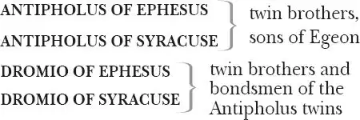

The Comedy of Errors
Solinus, DUKE of Ephesus
EGEON , a merchant from Syracuse, father of the Antipholus twins

ADRIANA , wife of Antipholus of Ephesus
LUCIANA , her sister
LUCE , Adriana's kitchen-maid
A COURTESAN
ANGELO , a goldsmith
BALTHASAR , a merchant
FIRST MERCHANT
SECOND MERCHANT , Angelo's creditor
Doctor PINCH , a schoolmaster and exorcist
EMILIA , an abbess at Ephesus
Jailer, Officer, Messenger, Servants and other Attendants
List of parts bondsmen slaves
Act 1
Scene 1 1 / running scene 1
Enter Duke of Ephesus 2 with [Egeon ] the merchant of Syracuse 3 , Jailer and other Attendants
EGEON Proceed, Solinus, to procure my fall,
And by the doom 4 of death end woes and all.
DUKE Merchant of Syracusa, plead no more.
I am not partial 5 to infringe our laws;
The enmity and discord which of late
Sprung from the rancorous outrage 6 of your duke
To merchants, our well-dealing 7 countrymen,
Who, wanting 8 guilders 9 to redeem 10 their lives,
Have sealed 11 his rigorous statutes 12 with their bloods,
Excludes all pity from our threat'ning looks,
For, since the mortal 13 and intestine 14 jars 15
'Twixt thy seditious 16 countrymen and us,
It hath in solemn synods 17 been decreed,
Both by the Syracusans and ourselves,
To admit no traffic to 18 our adverse 19 towns.
Nay, more: if any born at Ephesus
Be seen at any Syracusan marts 20 and fairs,
Again, if any Syracusan born
Come to 21 the bay of Ephesus, he dies:
His goods confiscate to the duke's dispose 22 ,
Unless a thousand marks 23 be levièd 24
To quit 25 the penalty and to ransom him.
Thy substance 26 , valued at the highest rate,
Cannot amount unto a hundred marks,
Therefore by law thou art condemned to die.
EGEON Yet this my comfort: when your words are done,
My woes end likewise with the evening sun.
DUKE Well, Syracusan, say in brief the cause
Why thou departed'st from thy native home,
And for what cause thou cam'st to Ephesus.
EGEON A heavier 27 task could not have been imposed
Than I 28 to speak my griefs unspeakable.
Yet, that 29 the world may witness that my end
Was wrought by nature 30 , not by vile offence,
I'll utter what my sorrow gives me leave 31 .
In Syracusa was I born, and wed
Unto a woman, happy but 32 for me,
And by me, had not our hap been bad 33 .
With her I lived in joy, our wealth increased
By prosperous voyages I often made
To Epidamium 34 , till my factor's 35 death
And the great care of goods at random 36 left,
Drew me from kind embracements 37 of my spouse;
From whom my absence was not six months old
Before herself — almost at fainting under
The pleasing punishment 38 that women bear —
Had made provision for her following me,
And soon and safe arrivèd where I was.
There had she not been long, but she became
A joyful mother of two goodly sons,
And, which was strange, the one so like the other,
As could not be distinguished but by names.
That very hour, and in the self-same inn,
A poor mean 39 woman was deliverèd
Of such a burden, male twins, both alike.
Those, for 40 their parents were exceeding poor,
I bought, and brought up to attend 41 my sons.
My wife, not meanly 42 proud of two such boys,
Made daily motions 43 for our home return.
Unwilling I agreed. Alas, too soon we came aboard.
A league 44 from Epidamium had we sailed
Before the always wind-obeying deep 45
Gave any tragic instance 46 of our harm.
But longer did we not retain much hope,
For what obscurèd light the heavens did grant
Did but convey unto our fearful minds
A doubtful warrant 47 of immediate death,
Which though myself would gladly have embraced,
Yet the incessant weepings of my wife,
Weeping before for 48 what she saw must come,
And piteous plainings 49 of the pretty babes,
That mourned for fashion 50 , ignorant what to fear,
Forced me to seek delays 51 for them and me.
And this it was 52 — for other means was none —
The sailors sought for safety by our boat 53 ,
And left the ship, then sinking-ripe 54 , to us.
My wife, more careful 55 for the latter-born 56 ,
Had fastened him unto a small spare mast,
Such as seafaring men provide for storms:
To him one of the other twins was bound,
Whilst I had been like 57 heedful of the other.
The children thus disposed, my wife and I,
Fixing our eyes on whom 58 our care was fixed,
Fastened ourselves at either end the 59 mast,
And floating straight 60 , obedient to the stream 61 ,
Was carried towards Corinth 62 , as we thought.
At length the sun, gazing upon the earth,
Dispersed those vapours 63 that offended 64 us,
And by the benefit 65 of his wishèd light,
The seas waxed calm, and we discoverèd
Two ships from far, making amain 66 to us,
Of Corinth that, of Epidaurus 67 this.
But ere 68 they came — O, let me say no more.
Gather the sequel by that 69 went before.
DUKE Nay, forward 70 , old man, do not break off so,
For we may pity, though not pardon thee.
EGEON O, had the gods done so, I had not now
Worthily 71 termed them merciless to us:
For ere the ships could meet by 72 twice five leagues 73 ,
We were encountered by a mighty rock,
Which being violently borne up upon,
Our helpful ship was splitted in the midst,
So that in this unjust divorce of us,
Fortune had left to both of us alike
What 74 to delight in, what to sorrow for.
Her part, poor soul, seeming as burdened
With lesser weight, but not with lesser woe,
Was carried with more speed before the wind,
And in our sight they three were taken up
By fishermen of Corinth, as we thought.
At length, another ship had seized on us 75 ,
And knowing whom it was their hap 76 to save,
Gave healthful welcome to their shipwrecked guests,
And would have reft the fishers of their prey 77 ,
Had not their bark 78 been very slow of sail,
And therefore homeward did they bend their course.
Thus have you heard me severed from my bliss,
That by misfortunes was my life prolonged,
To tell sad stories of my own mishaps.
DUKE And for the sake of them thou sorrowest for,
Do me the favour to dilate 79 at full
What have befall'n of 80 them and thee till now.
EGEON My youngest boy, and yet my eldest 81 care,
At eighteen years became inquisitive
After 82 his brother, and importuned 83 me
That his attendant 84 — for his case was like 85 ,
Reft of his brother, but retained his name 86 —
Might bear him company in the quest of 87 him:
Whom whilst I laboured of a love 88 to see,
I hazarded the loss of whom I loved 89 .
Five summers have I spent in farthest Greece,
Roaming clean 90 through the bounds 91 of Asia,
And coasting 92 homeward, came to Ephesus,
Hopeless to find, yet loath to leave unsought
Or 93 that or any place that harbours men.
But here must end the story of my life,
And happy were I in my timely death,
Could all my travels 94 warrant 95 me they live.
DUKE Hapless 96 Egeon, whom the fates have marked
To bear the extremity of dire mishap.
Now trust me, were it not against our laws,
Against my crown, my oath, my dignity,
Which princes, would 97 they, may not disannul 98 ,
My soul should sue 99 as advocate for thee.
But, though thou art adjudgèd 100 to the death,
And passèd sentence may not be recalled
But 101 to our honour's great disparagement 102 ,
Yet will I favour thee in what I can;
Therefore, merchant, I'll limit 103 thee this day
To seek thy health 104 by beneficial help.
Try all the friends thou hast in Ephesus,
Beg thou or borrow to make up the sum,
And live. If no, then thou art doomed to die.
Jailer, take him to thy custody.
JAILER I will, my lord.
EGEON Hopeless and helpless doth Egeon wend 105 ,
But to procrastinate 106 his lifeless end.
Exeunt
Scene 2 / running scene 1 continues
Enter Antipholus 107 [of Syracuse ], a Merchant [of Ephesus ] and Dromio 108 [of Syracuse ]
MERCHANT OF EPHESUS Therefore give out 109 you are of Epidamium,
Lest that your goods too soon be confiscate.
This very day a Syracusan merchant
Is apprehended for arrival here,
And not being able to buy out 110 his life,
According to the statute of the town,
Dies ere the weary sun set in the west.
There is your money that I had to keep 111 .
Gives money
ANTIPHOLUS OF SYRACUSE Go bear it to the Centaur 112 , where we host 113 ,
To Dromio
And stay there, Dromio, till I come to thee.
Within this hour it will be dinner-time 114 .
Till that, I'll view the manners 115 of the town,
Peruse 116 the traders, gaze upon the buildings,
And then return and sleep within mine inn,
For with long travel I am stiff and weary.
Get thee away.
DROMIO OF SYRACUSE Many a man would take you at your word,
And go indeed, having so good a mean 117 .
Exit
ANTIPHOLUS OF SYRACUSE A trusty villain 118 , sir, that very oft 119 ,
When I am dull with care 120 and melancholy,
Lightens my humour 121 with his merry jests.
What, will you walk with me about the town,
And then go to my inn and dine with me?
MERCHANT OF EPHESUS I am invited, sir, to certain merchants,
Of whom I hope to make much benefit 122 .
I crave your pardon. Soon at 123 five o'clock,
Please you, I'll meet with you upon the mart,
And afterward consort 124 you till bed-time.
My present business calls me from you now.
ANTIPHOLUS OF SYRACUSE Farewell till then. I will go lose myself
And wander up and down to view the city.
MERCHANT OF EPHESUS Sir, I commend you to your own content 125 .
Exit
ANTIPHOLUS OF SYRACUSE He that commends me to mine own content
Commends me to the thing I cannot get.
I to the world am like a drop of water
That in the ocean seeks another drop,
Who, falling there to find his fellow forth 126 —
Unseen 127 , inquisitive — confounds 128 himself.
So I, to find a mother and a brother,
In quest of them, unhappy 129 , lose myself.
Enter Dromio of Ephesus
Here comes the almanac of my true date 130 .—
What now? How chance thou art returned so soon?
DROMIO OF EPHESUS Returned so soon? Rather approached too late:
The capon 131 burns, the pig falls from the spit,
The clock hath strucken twelve upon the bell,
My mistress made it one 132 upon my cheek.
She is so hot 133 because the meat is cold,
The meat is cold because you come not home,
You come not home because you have no stomach 134 ,
You have no stomach having broke your fast 135 :
But we that know what 'tis to fast and pray 136
Are penitent 137 for your default 138 today.
ANTIPHOLUS OF SYRACUSE Stop in your wind 139 , sir. Tell me this, I pray:
Where have you left the money that I gave you?
DROMIO OF EPHESUS O, sixpence that I had o' 140 Wednesday last
To pay the saddler for my mistress' crupper 141 ?
The saddler had it, sir, I kept it not.
ANTIPHOLUS OF SYRACUSE I am not in a sportive 142 humour now:
Tell me, and dally not, where is the money?
We being strangers here, how dar'st thou trust
So great a charge 143 from thine own custody 144 ?
DROMIO OF EPHESUS I pray you jest, sir, as you sit at dinner.
I from my mistress come to you in post 145 ,
If I return I shall be post 146 indeed,
For she will score 147 your fault upon my pate 148 .
Methinks your maw 149 , like mine, should be your clock,
And strike you home without a messenger.
ANTIPHOLUS OF SYRACUSE Come, Dromio, come, these jests are out of season 150 ,
Reserve them till a merrier hour than this.
Where is the gold I gave in charge to thee?
DROMIO OF EPHESUS To me, sir? Why, you gave no gold to me.
ANTIPHOLUS OF SYRACUSE Come on, sir knave, have done 151 your foolishness,
And tell me how thou hast disposed thy charge 152 .
DROMIO OF EPHESUS My charge was but to fetch you from the mart
Home to your house, the Phoenix 153 , sir, to dinner;
My mistress and her sister stays 154 for you.
ANTIPHOLUS OF SYRACUSE Now as I am a Christian, answer me,
In what safe place you have bestowed my money,
Or I shall break that merry sconce 155 of yours
That stands 156 on tricks when I am undisposed 157 .
Where is the thousand marks thou hadst of me?
DROMIO OF EPHESUS I have some marks of yours upon my pate,
Some of my mistress' marks upon my shoulders,
But not a thousand marks between you both.
If I should pay your worship those 158 again,
Perchance you will not bear them patiently.
ANTIPHOLUS OF SYRACUSE Thy mistress' marks? What mistress, slave, hast thou?
DROMIO OF EPHESUS Your worship's wife, my mistress at the Phoenix;
She that doth fast till you come home to dinner,
And prays that you will hie 159 you home to dinner.
ANTIPHOLUS OF SYRACUSE What, wilt thou flout me thus unto my face
Being forbid? There, take you that, sir knave.
Beats Dromio
DROMIO OF EPHESUS What mean you, sir? For God's sake, hold your hands:
Nay, an 160 you will not, sir, I'll take 161 my heels.
Exit
ANTIPHOLUS OF SYRACUSE Upon my life, by some device 162 or other
The villain is o'er-raught 163 of all my money.
They say this town is full of cozenage 164 ,
As 165 nimble jugglers 166 that deceive the eye,
Dark-working 167 sorcerers that change the mind,
Soul-killing witches that deform 168 the body,
Disguisèd cheaters, prating mountebanks 169 ,
And many suchlike liberties of sin 170 .
If it prove so, I will be gone the sooner.
I'll to the Centaur to go seek this slave.
I greatly fear my money is not safe.
Exit
Act 2
Scene 1 / running scene 2
Enter Adriana 171 , wife to Antipholus 172 [of Ephesus ], with Luciana 173 , her sister
ADRIANA Neither my husband nor the slave returned,
That in such haste I sent to seek his master?
Sure 174 , Luciana, it is two o'clock.
LUCIANA Perhaps some merchant hath invited him,
And from the mart he's somewhere gone to dinner.
Good sister, let us dine and never fret;
A man is master of his liberty:
Time is their master, and when they see 175 time,
They'll go or come; if so, be patient, sister.
ADRIANA Why should their liberty than ours be more?
LUCIANA Because their business still 176 lies out o'door.
ADRIANA Look, when 177 I serve 178 him so, he takes it ill 179 .
LUCIANA O, know he is the bridle of your will.
ADRIANA There's none but asses will be bridled so.
LUCIANA Why, headstrong liberty is lashed 180 with woe.
There's nothing situate 181 under heaven's eye
But hath his bound 182 , in earth, in sea, in sky.
The beasts, the fishes and the wingèd fowls
Are their males' subjects and at their controls 183 .
Man, more divine 184 , the master of all these,
Lord of the wide world and wild wat'ry seas,
Indued with intellectual sense and souls,
Of more pre-eminence than fish and fowls,
Are masters to their females, and their lords:
Then let your will attend on their accords 185 .
ADRIANA This servitude makes you to keep unwed.
LUCIANA Not this, but troubles of the marriage bed.
ADRIANA But, were you wedded, you would bear some sway 186 .
LUCIANA Ere I learn love, I'll practise to obey.
ADRIANA How if your husband start some other where 187 ?
LUCIANA Till he come home again, I would forbear 188 .
ADRIANA Patience unmoved! No marvel though she pause 189 ,
They can be meek that have no other cause 190 .
A wretched soul, bruised with adversity,
We bid be quiet when we hear it cry.
But were we burdened with like 191 weight of pain,
As much or more we should ourselves complain.
So thou, that hast no unkind mate to grieve thee,
With urging helpless 192 patience would relieve me,
But if thou live to see like right bereft 193 ,
This fool-begged 194 patience in thee will be left 195 .
LUCIANA Well, I will marry one day, but to try 196 .
Here comes your man, now is your husband nigh.
Enter Dromio of Ephesus
ADRIANA Say, is your tardy master now at hand?
DROMIO OF EPHESUS Nay, he's at two hands with me, and that my two ears 197 can witness.
ADRIANA Say, didst thou speak with him? Know'st thou his mind?
DROMIO OF EPHESUS Ay, ay, he told 198 his mind upon mine ear. Beshrew 199 his hand,
I scarce could understand it.
LUCIANA Spake he so doubtfully 200 thou couldst not feel his meaning?
DROMIO OF EPHESUS Nay, he struck so plainly, I could too well feel his blows, and withal so doubtfully that I could scarce understand 201 them.
ADRIANA But say, I prithee, is he coming home?
It seems he hath great care to please his wife.
DROMIO OF EPHESUS Why, mistress, sure my master is horn-mad 202 .
ADRIANA Horn-mad, thou villain?
DROMIO OF EPHESUS I mean not cuckold-mad 203 , but sure he is stark mad:
When I desired him to come home to dinner,
He asked me for a thousand marks in gold.
''Tis dinner-time,' quoth I, 'My gold!' quoth he.
'Your meat doth burn,' quoth I, 'My gold!' quoth he.
'Will you come home?' quoth I, 'My gold!' quoth he.
'Where is the thousand marks I gave thee, villain?'
'The pig,' quoth I, 'is burned.' 'My gold!' quoth he.
'My mistress, sir,' quoth I. 'Hang up 204 thy mistress!
I know not thy mistress, out on 205 thy mistress!'
LUCIANA Quoth who?
DROMIO OF EPHESUS Quoth my master:
'I know,' quoth he, 'no house, no wife, no mistress.'
So that my errand, due unto my tongue,
I thank him, I bare home upon my shoulders 206 ,
For, in conclusion, he did beat me there.
ADRIANA Go back again, thou slave, and fetch him home.
Beats him
DROMIO OF EPHESUS Go back again, and be new 207 beaten home?
For God's sake, send some other messenger.
ADRIANA Back, slave, or I will break thy pate across.
DROMIO OF EPHESUS And he will bless 208 that cross with other beating:
Between you I shall have a holy 209 head.
ADRIANA Hence, prating peasant 210 , fetch thy master home.
DROMIO OF EPHESUS Am I so round 211 with you as you with me,
That like a football you do spurn 212 me thus?
You spurn me hence, and he will spurn me hither:
If I last 213 in this service, you must case me in leather 214 .
[Exit ]
LUCIANA Fie, how impatience loureth 215 in your face!
To Adriana
ADRIANA His 216 company must do his minions grace 217 ,
Whilst I at home starve for a merry look.
Hath homely 218 age th'alluring beauty took
From my poor cheek? Then he hath wasted 219 it.
Are my discourses 220 dull? Barren my wit 221 ?
If voluble 222 and sharp discourse be marred 223 ,
Unkindness blunts it more than marble hard 224 .
Do their 225 gay vestments 226 his affections bait 227 ?
That's not my fault, he's master of my state 228 .
What ruins are in me that can be found,
By him not ruined 229 ? Then is he the ground 230
Of my defeatures 231 . My decayèd fair 232 ,
A sunny look of his would soon repair.
But, too unruly deer 233 , he breaks the pale 234
And feeds from home 235 ; poor I am but his stale 236 .
LUCIANA Self-harming jealousy! Fie, beat it hence.
ADRIANA Unfeeling fools 237 can with such wrongs dispense.
I know his eye doth homage otherwhere 238 ,
Or else what lets 239 it but he would be here?
Sister, you know he promised me a chain,
Would that alone, a love he would detain 240 ,
So 241 he would keep fair quarter with his bed 242 :
I see the jewel best enamellèd 243
Will lose his beauty, yet the gold bides still 244
That others touch 245 , and often touching will
Wear 246 gold, and no man that hath a name 247 ,
By falsehood and corruption doth it shame.
Since that my beauty cannot please his eye,
I'll weep what's left away, and weeping die.
LUCIANA How many fond 248 fools serve mad jealousy?
Exeunt
Scene 2 / running scene 3
Enter Antipholus [of Syracuse ]
ANTIPHOLUS OF SYRACUSE The gold I gave to Dromio is laid up
Safe at the Centaur, and the heedful 249 slave 250
Is wand'red forth, in care 251 to seek me out
By computation and mine host's report 252 .
I could not speak 253 with Dromio since at first
I sent him from the mart. See, here he comes.
Enter Dromio of Syracuse
How now, sir, is your merry humour altered?
As you love strokes 254 , so jest with me again.
You know no Centaur? You received no gold?
Your mistress sent to have me home to dinner?
My house was at the Phoenix? Wast thou mad,
That thus so madly thou didst answer me?
DROMIO OF SYRACUSE What answer, sir? When spake I 255 such a word?
ANTIPHOLUS OF SYRACUSE Even now, even here, not half an hour since.
DROMIO OF SYRACUSE I did not see you since you sent me hence
Home to the Centaur with the gold you gave me.
ANTIPHOLUS OF SYRACUSE Villain, thou didst deny the gold's receipt 256 ,
And told'st me of a mistress and a dinner,
For which I hope thou felt'st 257 I was displeased.
DROMIO OF SYRACUSE I am glad to see you in this merry vein 258 :
What means this jest? I pray you, master, tell me.
ANTIPHOLUS OF SYRACUSE Yea, dost thou jeer and flout me in the teeth 259 ?
Think'st thou I jest? Hold, take thou that, and that.
Beats Dromio
DROMIO OF SYRACUSE Hold, sir, for God's sake! Now your jest is earnest 260 ,
Upon what bargain do you give it me?
ANTIPHOLUS OF SYRACUSE Because that I familiarly sometimes
Do use you for 261 my fool 262 and chat with you,
Your sauciness 263 will jest upon 264 my love,
And make a common of my serious hours 265 .
When the sun shines, let foolish gnats make sport 266 ,
But creep in crannies when he hides his beams.
If you will jest with me, know my aspect 267 ,
And fashion 268 your demeanour 269 to my looks,
Or I will beat this method in your sconce 270 .
DROMIO OF SYRACUSE Sconce call you it? So 271 you would leave battering 272 , I had rather have it a head. An 273 you use these blows long 274 , I must get a sconce 275 for my head and ensconce 276 it too, or else I shall seek my wit in my shoulders 277 . But I pray, sir, why am I beaten?
ANTIPHOLUS OF SYRACUSE Dost thou not know?
DROMIO OF SYRACUSE Nothing, sir, but that I am beaten.
ANTIPHOLUS OF SYRACUSE Shall I tell you why?
DROMIO OF SYRACUSE Ay, sir, and wherefore 278 ; for they say every why hath a wherefore.
ANTIPHOLUS OF SYRACUSE Why, first, for flouting me, and then, wherefore, for urging 279 it the second time to me.
DROMIO OF SYRACUSE Was there ever any man thus beaten out of season 280 ,
When in the why and the wherefore is neither rhyme nor reason?
Well, sir, I thank you.
ANTIPHOLUS OF SYRACUSE Thank me, sir, for what?
DROMIO OF SYRACUSE Marry 281 , sir, for this something that you gave me for nothing 282 .
ANTIPHOLUS OF SYRACUSE I'll make you amends next, to give 283 you nothing for something. But say, sir, is it dinner-time?
DROMIO OF SYRACUSE No, sir, I think the meat wants that 284 I have.
ANTIPHOLUS OF SYRACUSE In good time 285 , sir. What's that?
DROMIO OF SYRACUSE Basting 286 .
ANTIPHOLUS OF SYRACUSE Well, sir, then 'twill be dry.
DROMIO OF SYRACUSE If it be, sir, I pray you eat none of it.
ANTIPHOLUS OF SYRACUSE Your reason?
DROMIO OF SYRACUSE Lest it make you choleric 287 and purchase me another dry 288 basting.
ANTIPHOLUS OF SYRACUSE Well, sir, learn to jest in good time 289 . There's a time for all things.
DROMIO OF SYRACUSE I durst have denied 290 that before you were so choleric.
ANTIPHOLUS OF SYRACUSE By what rule 291 , sir?
DROMIO OF SYRACUSE Marry, sir, by a rule as plain as the plain bald pate of Father Time 292 himself.
ANTIPHOLUS OF SYRACUSE Let's hear it.
DROMIO OF SYRACUSE There's no time for a man to recover his hair that grows bald by nature.
ANTIPHOLUS OF SYRACUSE May he not do it by fine and recovery 293 ?
DROMIO OF SYRACUSE Yes, to pay a fine 294 for a periwig 295 and recover the lost hair 296 of another man.
ANTIPHOLUS OF SYRACUSE Why is Time such a niggard 297 of hair, being, as it is, so plentiful an excrement 298 ?
DROMIO OF SYRACUSE Because it is a blessing that he bestows on beasts, and what he hath scanted 299 men in hair 300 , he hath given them in wit.
ANTIPHOLUS OF SYRACUSE Why, but there's many a man hath more hair than wit.
DROMIO OF SYRACUSE Not a man of those but he hath the wit to lose his hair.
ANTIPHOLUS OF SYRACUSE Why, thou didst conclude hairy men plain dealers 301 without wit.
DROMIO OF SYRACUSE The plainer dealer 302 , the sooner lost; yet he loseth it in a kind of jollity 303 .
ANTIPHOLUS OF SYRACUSE For what reason?
DROMIO OF SYRACUSE For two 304 , and sound 305 ones too.
ANTIPHOLUS OF SYRACUSE Nay, not sound, I pray you.
DROMIO OF SYRACUSE Sure 306 ones, then.
ANTIPHOLUS OF SYRACUSE Nay, not sure in a thing falsing 307 .
DROMIO OF SYRACUSE Certain 308 ones then.
ANTIPHOLUS OF SYRACUSE Name them.
DROMIO OF SYRACUSE The one, to save the money that he spends in tiring 309 : the other, that at dinner they 310 should not drop in his porridge 311 .
ANTIPHOLUS OF SYRACUSE You would all this time have proved there is no time for all things.
DROMIO OF SYRACUSE Marry, and did, sir: namely, in no time to recover hair lost by nature.
ANTIPHOLUS OF SYRACUSE But your reason was not substantial 312 , why there is no time to recover.
DROMIO OF SYRACUSE Thus I mend 313 it: Time himself is bald 314 , and therefore to the world's end will have bald followers.
ANTIPHOLUS OF SYRACUSE I knew 'twould be a bald conclusion — but soft, who wafts 315 us yonder?
Enter Adriana [beckoning ] and Luciana
ADRIANA Ay, ay, Antipholus, look strange 316 and frown,
Some other mistress hath thy sweet aspects 317 .
I am not Adriana nor thy wife.
The time was once when thou unurged 318 wouldst vow
That never words were music to thine ear,
That never object pleasing in thine eye,
That never touch well welcome to thy hand,
That never meat sweet-savoured in thy taste,
Unless I spake or looked or touched or carved 319 to thee.
How comes it now, my husband, O, how comes it,
That thou art then estrangèd 320 from thyself ?
Thy self I call it, being strange to me,
That, undividable, incorporate 321 ,
Am better than thy dear self 's better part 322 .
Ah, do not tear away thyself from me,
For know, my love, as easy mayst thou fall 323
A drop of water in the breaking gulf 324 ,
And take unmingled thence that drop again
Without addition or diminishing,
As take from me thyself, and not me too 325 .
How dearly 326 would it touch thee to the quick 327
Shouldst thou but hear I were licentious,
And that this body, consecrate 328 to thee,
By ruffian lust should be contaminate?
Wouldst thou not spit at me, and spurn 329 at me,
And hurl the name of 'husband' in my face,
And tear the stained 330 skin of my harlot brow,
And from my false 331 hand cut the wedding ring,
And break it with a deep-divorcing vow?
I know thou canst, and therefore see thou do it 332 .
I am possessed with 333 an adulterate 334 blot,
My blood is mingled 335 with the crime of lust.
For if we two be one, and thou play false,
I do digest the poison of thy flesh,
Being strumpeted 336 by thy contagion.
Keep then fair league 337 and truce with thy true bed,
I live distained 338 , thou undishonourèd.
ANTIPHOLUS OF SYRACUSE Plead you to me, fair dame? I know you not:
In Ephesus I am but two hours old,
As strange unto your town as to your talk,
Who 339 , every word by all my wit being scanned 340 ,
Wants wit in all one word to understand 341 .
LUCIANA Fie, brother 342 , how the world is changed with you.
When were you wont 343 to use my sister thus?
She sent for you by Dromio home to dinner.
ANTIPHOLUS OF SYRACUSE By Dromio?
DROMIO OF SYRACUSE By me?
ADRIANA By thee, and this thou didst return 344 from him,
That he did buffet 345 thee and in his blows
Denied my house for 346 his, me for his wife.
ANTIPHOLUS OF SYRACUSE Did you converse, sir, with this gentlewoman?
What is the course and drift 347 of your compact 348 ?
DROMIO OF SYRACUSE I, sir? I never saw her till this time.
ANTIPHOLUS OF SYRACUSE Villain, thou liest, for even her very words
Didst thou deliver to me on the mart.
DROMIO OF SYRACUSE I never spake with her in all my life.
ANTIPHOLUS OF SYRACUSE How can she thus then call us by our names?
Unless it be by inspiration 349 .
ADRIANA How ill agrees it 350 with your gravity 351
To counterfeit 352 thus grossly 353 with your slave,
Abetting 354 him to thwart me in my mood 355 .
Be it my wrong you are from me exempt 356 ,
But wrong not that wrong with a more contempt 357 .
Come, I will fasten on this sleeve of thine:
Clings to his sleeve
Thou art an elm, my husband, I a vine,
Whose weakness, married to thy stronger state 358 ,
Makes me with thy strength to communicate 359 .
If aught possess 360 thee from me, it is dross 361 ,
Usurping ivy, brier 362 , or idle 363 moss,
Who all for want of pruning, with intrusion 364 ,
Infect thy sap and live on thy confusion 365 .
ANTIPHOLUS OF SYRACUSE To me she speaks, she moves me for her theme 366 ;
Aside
What, was I married to her in my dream?
Or sleep I now, and think I hear all this?
What error 367 drives our eyes and ears amiss?
Until I know this sure uncertainty 368 ,
I'll entertain 369 the offered fallacy 370 .
LUCIANA Dromio, go bid the servants spread 371 for dinner.
DROMIO OF SYRACUSE O, for my beads 372 , I cross me 373 for 374 a sinner.
Crosses himself
This is the fairy land. O spite of spites,
We talk with goblins, owls 375 and sprites 376 ;
If we obey them not, this will ensue:
They'll suck our breath or pinch us black and blue.
LUCIANA Why prat'st thou 377 to thyself and answer'st not?
Dromio, thou Dromio, thou snail, thou slug, thou sot 378 .
DROMIO OF SYRACUSE I am transformèd 379 , master, am I not?
ANTIPHOLUS OF SYRACUSE I think thou art in mind, and so am I.
DROMIO OF SYRACUSE Nay, master, both in mind and in my shape.
ANTIPHOLUS OF SYRACUSE Thou hast thine own form.
DROMIO OF SYRACUSE No, I am an ape 380 .
LUCIANA If thou art changed to aught 381 , 'tis to an ass.
DROMIO OF SYRACUSE 'Tis true, she rides 382 me and I long for grass 383 .
'Tis so, I am an ass, else it could never be
But I should know her as well as she knows me.
ADRIANA Come, come, no longer will I be a fool,
To put the finger in the eye and weep 384 ,
Whilst man and master laughs my woes to scorn 385 .
Come, sir, to dinner.— Dromio, keep 386 the gate.—
Husband, I'll dine above 387 with you today,
And shrive 388 you of a thousand idle pranks.—
Sirrah, if any ask you for your master,
Say he dines forth 389 , and let no creature enter.—
Come, sister.— Dromio, play the porter well.
ANTIPHOLUS OF SYRACUSE Am I in earth, in heaven, or in hell?
Aside
Sleeping or waking, mad or well-advised 390 ?
Known unto these and to myself disguised?
I'll say as they say, and persever 391 so,
And in this mist at all adventures go 392 .
DROMIO OF SYRACUSE Master, shall I be porter at the gate?
ADRIANA Ay, and let none enter, lest I break your pate.
LUCIANA Come, come, Antipholus, we dine too late.
Exeunt
Dromio of Syracuse remains as porter
Act 3
Scene 1 / running scene 3 continues
Enter Antipholus of Ephesus, his man Dromio [of Ephesus ], Angelo the goldsmith and Balthazar the merchant
ANTIPHOLUS OF EPHESUS Good Signior Angelo, you must excuse us all,
My wife is shrewish 393 when I keep not hours 394 ;
Say that I lingered with you at your shop
To see the making of her carcanet 395 ,
And that tomorrow you will bring it home.
But here's a villain that would face me down 396
He met me on the mart, and that I beat him,
And charged 397 him with a thousand marks in gold,
And that I did deny my wife and house.
Thou drunkard, thou, what didst thou mean by this?
DROMIO OF EPHESUS Say what you will, sir, but I know what I know:
That you beat me at the mart, I have your hand 398 to show.
If the skin were parchment and the blows you gave were ink,
Your own handwriting would tell you what I think.
ANTIPHOLUS OF EPHESUS I think thou art an ass.
DROMIO OF EPHESUS Marry, so it doth appear
By the wrongs I suffer and the blows I bear.
I should kick, being kicked, and being at that pass 399 ,
You would keep from my heels and beware of an ass.
ANTIPHOLUS OF EPHESUS You're sad 400 , Signior Balthazar. Pray God our cheer 401
May answer 402 my good will and your good welcome here.
BALTHAZAR I hold your dainties cheap, sir, and your welcome dear 403 .
ANTIPHOLUS OF EPHESUS O, Signior Balthazar, either at flesh 404 or fish,
A table full of welcome makes scarce one dainty dish 405 .
BALTHAZAR Good meat, sir, is common, that every churl 406 affords.
ANTIPHOLUS OF EPHESUS And welcome more common, for that's nothing but words.
BALTHAZAR Small cheer 407 and great welcome makes a merry feast.
ANTIPHOLUS OF EPHESUS Ay, to a niggardly host, and more sparing 408 guest.
But though my cates 409 be mean 410 , take them in good part 411 ,
Better cheer may you have, but not with better heart.
Tries the door of his house
But soft 412 , my door is locked.— Go bid them let us in.
To Dromio
DROMIO OF EPHESUS Maud, Bridget, Marian, Cicely, Gillian, Ginn 413 !
Calling
DROMIO OF SYRACUSE Mome 414 , malt-horse 415 , capon 416 , coxcomb 417 , idiot, patch 418 ,
Speaks from the other side of the door
Either get thee from the door or sit down at the hatch 419 :
Dost thou conjure for wenches 420 , that thou call'st for such store 421 ,
When one is one too many 422 ? Go, get thee from the door.
DROMIO OF EPHESUS What patch is made our porter? My master stays 423 in the street.
DROMIO OF SYRACUSE Let him walk from 424 whence he came, lest he catch cold on's feet.
ANTIPHOLUS OF EPHESUS Who talks within there? Ho 425 , open the door.
DROMIO OF SYRACUSE Right, sir, I'll tell you when, an 426 you'll tell me wherefore.
ANTIPHOLUS OF EPHESUS Wherefore? For my dinner: I have not dined today.
DROMIO OF SYRACUSE Nor today here you must not, come again when you may.
ANTIPHOLUS OF EPHESUS What art thou that keep'st me out from the house I owe 427 ?
DROMIO OF SYRACUSE The porter for this time, sir, and my name is Dromio.
DROMIO OF EPHESUS O, villain, thou hast stol'n both mine office 428 and my name:
The one ne'er got me credit, the other mickle 429 blame.
If thou hadst been Dromio today in my place,
Thou wouldst have changed thy face for a name, or thy name for an ass 430 .
Enter Luce [within or above, concealed from the others ]
LUCE What a coil 431 is there, Dromio? Who are those at the gate?
DROMIO OF EPHESUS Let my master in, Luce.
LUCE Faith, no, he comes too late, and so tell your master.
DROMIO OF EPHESUS O lord, I must laugh.
Have at 432 you with a proverb — Shall I set in my staff 433 ?
LUCE Have at you with another, that's — When? Can you tell 434 ?
DROMIO OF SYRACUSE If thy name be called Luce — Luce, thou hast answered him well.
ANTIPHOLUS OF EPHESUS Do you hear, you minion 435 , you'll let us in, I hope?
To Luce
LUCE I thought to have asked you.
DROMIO OF SYRACUSE And you said no.
DROMIO OF EPHESUS So come, help.
They beat the door
Well struck, there was blow 436 for blow.
ANTIPHOLUS OF EPHESUS Thou baggage 437 , let me in.
To Luce
LUCE Can you tell for whose sake?
DROMIO OF EPHESUS Master, knock 438 the door hard.
LUCE Let him knock till it ache.
ANTIPHOLUS OF EPHESUS You'll cry for this, minion, if I beat the door down.
LUCE What needs all that, and a pair of stocks 439 in the town? 440
Enter Adriana
Within or above, concealed, like Luce
ADRIANA Who is that at the door that keeps 441 all this noise?
DROMIO OF SYRACUSE By my troth, your town is troubled with unruly boys 442 .
ANTIPHOLUS OF EPHESUS Are you there, wife? You might have come before.
ADRIANA Your wife, sir knave? Go, get you from the door.
[Exit with Luce ]
DROMIO OF EPHESUS If you went in pain, master, this 'knave' would go sore 443 .
ANGELO Here is neither cheer, sir, nor welcome. We would fain 444 have either.
BALTHAZAR In debating which was best, we shall part 445 with neither.
DROMIO OF EPHESUS They stand at the door, master, bid them welcome hither.
ANTIPHOLUS OF EPHESUS There is something in the wind 446 , that we cannot get in.
DROMIO OF EPHESUS You would say so, master, if your garments were thin 447 .
Your cake 448 here is warm within: you stand 449 here in the cold.
It would make a man mad as a buck 450 to be so bought and sold 451 .
ANTIPHOLUS OF EPHESUS Go fetch me something, I'll break ope 452 the gate.
DROMIO OF SYRACUSE Break any breaking 453 here, and I'll break your knave's pate.
DROMIO OF EPHESUS A man may break a word 454 with you, sir, and words are but wind:
Ay, and break it in your face, so he break it not behind 455 .
DROMIO OF SYRACUSE It seems thou want'st breaking 456 . Out upon thee, hind 457 !
DROMIO OF EPHESUS Here's too much 'out upon thee!' I pray thee let me in.
DROMIO OF SYRACUSE Ay, when fowls have no feathers and fish have no fin 458 .
[Exit ]
ANTIPHOLUS OF EPHESUS Well, I'll break in. Go borrow me a crow 459 .
DROMIO OF EPHESUS A crow without feather? Master, mean you so?
For a fish without a fin, there's a fowl without a feather,
If a crow help us in, sirrah 460 , we'll pluck a crow 461 together.
ANTIPHOLUS OF EPHESUS Go get thee gone, fetch me an iron crow.
BALTHAZAR Have patience, sir, O, let it not be so!
Herein 462 you war against your reputation,
And draw within the compass of suspect 463
Th'unviolated honour of your wife.
Once this 464 , your long experience of her wisdom,
Her sober virtue, years and modesty,
Plead on her part some cause to you unknown 465 .
And doubt not, sir, but she will well excuse 466
Why at this time the doors are made 467 against you.
Be ruled by me, depart in patience,
And let us to the Tiger 468 all to dinner,
And about 469 evening, come yourself alone
To know the reason of this strange restraint.
If by strong hand 470 you offer 471 to break in
Now in the stirring passage 472 of the day,
A vulgar comment 473 will be made of 474 it,
And that supposed 475 by the common rout 476
Against your yet ungalled 477 estimation 478 ,
That may with foul intrusion enter in,
And dwell upon your grave when you are dead,
For slander lives upon succession 479 ,
Forever housed 480 where it gets possession 481 .
ANTIPHOLUS OF EPHESUS You have prevailed. I will depart in quiet,
And in despite of mirth 482 mean to be merry 483 .
I know a wench of excellent discourse,
Pretty and witty, wild 484 , and yet, too, gentle 485 .
There will we dine. This woman that I mean,
My wife — but I protest 486 , without desert 487 —
Hath oftentimes upbraided me withal 488 .
To her will we to dinner.— Get you home
To Angelo
And fetch the chain, by this 489 I know 'tis made.
Bring it, I pray you, to the Porpentine 490 ,
For there's the 491 house. That chain will I bestow —
Be it for nothing but to spite my wife —
Upon mine hostess there. Good sir, make haste.
Since mine own doors 492 refuse to entertain 493 me,
I'll knock 494 elsewhere, to see if they'll disdain me.
ANGELO I'll meet you at that place some hour hence.
ANTIPHOLUS OF EPHESUS Do so, this jest shall cost me some expense.
Exeunt
Scene 2 / running scene 3 continues
Enter Luciana with Antipholus of Syracuse
LUCIANA And may it be that you have quite forgot
A husband's office? Shall, Antipholus,
Even in the spring of love, thy love-springs 495 rot?
Shall love in building 496 grow so ruinous?
If you did wed my sister for her wealth,
Then for her wealth's sake use her with more kindness.
Or if you like elsewhere 497 , do it by stealth:
Muffle 498 your false 499 love with some show of blindness 500 .
Let not my sister read it in your eye,
Be not thy tongue thy own shame's orator 501 .
Look sweet, speak fair, become disloyalty 502 ,
Apparel vice like virtue's harbinger 503 ,
Bear a fair 504 presence though your heart be tainted,
Teach sin the carriage 505 of a holy saint,
Be secret-false 506 . What need she be acquainted?
What simple thief brags of his own attaint? 507
'Tis double wrong to truant with your bed
And let her read it in thy looks at board 508 .
Shame hath a bastard fame 509 , well managèd,
Ill deeds is doubled with an evil word.
Alas, poor women, make us but believe —
Being compact of credit 510 — that you love us.
Though others have the arm, show us the sleeve 511 .
We in your motion 512 turn, and you may move 513 us.
Then, gentle brother, get you in again,
Comfort my sister, cheer her, call her wife:
'Tis holy sport to be a little vain 514 ,
When the sweet breath of flattery conquers strife.
ANTIPHOLUS OF SYRACUSE Sweet mistress, what your name is else 515 I know not,
Nor by what wonder 516 you do hit of 517 mine,
Less in your knowledge and your grace you show not
Than our earth's wonder 518 , more than earth 519 divine.
Teach me, dear creature, how to think and speak.
Lay open to my earthy-gross conceit 520 ,
Smothered in errors, feeble, shallow, weak,
The folded 521 meaning of your words' deceit.
Against my soul's pure truth, why labour you
To make it wander in an unknown field?
Are you a god? Would you create me new 522 ?
Transform me then, and to your power I'll yield.
But if that I am I, then well I know,
Your weeping sister is no wife of mine,
Nor to her bed no homage 523 do I owe.
Far more, far more to you do I decline 524 .
O, train 525 me not, sweet mermaid, with thy note 526 ,
To drown me in thy sister's flood of tears.
Sing, siren, for thyself, and I will dote 527 .
Spread o'er the silver waves thy golden hairs,
And as a bed I'll take them, and there lie,
And in that glorious supposition 528 think
He gains by death that 529 hath such means to die 530 .
Let love, being light, be drownèd if she sink 531 .
LUCIANA What, are you mad that you do reason so?
ANTIPHOLUS OF SYRACUSE Not mad, but mated 532 , how, I do not know.
LUCIANA It is a fault that springeth from your eye.
ANTIPHOLUS OF SYRACUSE For gazing on your beams 533 , fair sun, being by.
LUCIANA Gaze where you should, and that will clear your sight.
ANTIPHOLUS OF SYRACUSE As good to wink 534 , sweet love, as look on night.
LUCIANA Why call you me love? Call my sister so.
ANTIPHOLUS OF SYRACUSE Thy sister's sister.
LUCIANA That's my sister.
ANTIPHOLUS OF SYRACUSE No:
It is thyself, mine own self's better part,
Mine eye's clear eye, my dear heart's dearer heart,
My food, my fortune and my sweet hope's aim,
My sole earth's heaven and my heaven's claim 535 .
LUCIANA All this my sister is, or else should be.
ANTIPHOLUS OF SYRACUSE Call thyself sister, sweet, for I am thee 536 .
Thee will I love, and with thee lead my life;
Thou hast no husband yet, nor I no wife:
Give me thy hand.
LUCIANA O, soft, sir, hold you still:
I'll fetch my sister, to get her good will 537 .
Exit
Enter Dromio of Syracuse
Running
ANTIPHOLUS OF SYRACUSE Why, how now, Dromio, where runn'st thou so fast?
DROMIO OF SYRACUSE Do you know me, sir? Am I Dromio? Am I your man? Am I myself?
ANTIPHOLUS OF SYRACUSE Thou art Dromio, thou art my man, thou art thyself.
DROMIO OF SYRACUSE I am an ass, I am a woman's man and besides 538 myself.
ANTIPHOLUS OF SYRACUSE What woman's man? And how besides thyself ?
DROMIO OF SYRACUSE Marry, sir, besides myself, I am due to a woman: one that claims me, one that haunts me, one that will have 539 me.
ANTIPHOLUS OF SYRACUSE What claim lays she to thee?
DROMIO OF SYRACUSE Marry sir, such claim as you would lay to your horse, and she would have me as a beast 540 — not that, I being a beast, she would have me, but that she, being a very beastly creature, lays claim to me.
ANTIPHOLUSS What is she?
DROMIO OF SYRACUSE A very reverent 541 body: ay, such a one as a man may not speak of, without he say 'sir-reverence' 542 . I have but lean 543 luck in the match, and yet is she a wondrous fat marriage.
ANTIPHOLUS OF SYRACUSE How dost thou mean a fat marriage?
DROMIO OF SYRACUSE Marry, sir, she's the kitchen wench 544 and all grease 545 , and I know not what use to put her to but to make a lamp of her and run from her by her own light. I warrant her rags and the tallow 546 in them will burn a Poland winter 547 . If she lives till doomsday, she'll burn a week 548 longer than the whole world.
ANTIPHOLUS OF SYRACUSE What complexion 549 is she of ?
DROMIO OF SYRACUSE Swart 550 , like my shoe, but her face nothing like so clean kept: for why? She sweats 551 a man may go over 552 shoes in the grime of it.
ANTIPHOLUS OF SYRACUSE That's a fault that water will mend.
DROMIO OF SYRACUSE No, sir, 'tis in grain 553 . Noah's flood could not do it.
ANTIPHOLUS OF SYRACUSE What's her name?
DROMIO OF SYRACUSE Nell, sir. But her name and three quarters — that's an ell 554 and three quarters — will not measure her from hip to hip.
ANTIPHOLUS OF SYRACUSE Then she bears some breadth?
DROMIO OF SYRACUSE No longer from head to foot than from hip to hip: she is spherical, like a globe. I could find out 555 countries in her.
ANTIPHOLUS OF SYRACUSE In what part of her body stands Ireland?
DROMIO OF SYRACUSE Marry, sir, in her buttocks: I found it out by the bogs 556 .
ANTIPHOLUS OF SYRACUSE Where Scotland?
DROMIO OF SYRACUSE I found it by the barrenness, hard in the palm of the hand 557 .
ANTIPHOLUS OF SYRACUSE Where France?
DROMIO OF SYRACUSE In her forehead, armed and reverted 558 , making war against her hair.
ANTIPHOLUS OF SYRACUSE Where England?
DROMIO OF SYRACUSE I looked for the chalky cliffs 559 , but I could find no whiteness in them. But I guess it stood in her chin, by the salt 560 rheum that ran between France and it.
ANTIPHOLUS OF SYRACUSE Where Spain?
DROMIO OF SYRACUSE Faith, I saw it not, but I felt it hot in her breath 561 .
ANTIPHOLUS OF SYRACUSE Where America, the Indies?
DROMIO OF SYRACUSE O sir, upon her nose, all o'er embellished with rubies, carbuncles, sapphires 562 , declining their rich aspect 563 to the hot breath of Spain, who sent whole armadoes of carracks to be ballast 564 at her nose.
ANTIPHOLUS OF SYRACUSE Where stood Belgia 565 , the Netherlands 566 ?
DROMIO OF SYRACUSE O sir, I did not look so low. To conclude, this drudge 567 or diviner 568 laid claim to me, called me Dromio, swore I was assured 569 to her, told me what privy 570 marks I had about me, as the mark of 571 my shoulder, the mole in my neck, the great wart on my left arm, that I, amazed, ran from her as a witch. And, I think, if my breast had not been made of faith, and my heart of steel, she had transformed me to a curtal dog 572 and made me turn i'th'wheel 573 .
ANTIPHOLUS OF SYRACUSE Go, hie 574 thee presently 575 , post 576 to the road 577 ,
An if 578 the wind blow any way from shore 579 ,
I will not harbour 580 in this town tonight.
If any bark put forth 581 , come to the mart,
Where I will walk till thou return to me.
If everyone knows us and we know none,
'Tis time, I think, to trudge 582 , pack and be gone.
DROMIO OF SYRACUSE As from a bear a man would run for life,
So fly I from her that would be my wife.
Exit
ANTIPHOLUS OF SYRACUSE There's none but witches 583 do inhabit here,
And therefore 'tis high time that I were hence.
She that doth call me husband, even my 584 soul
Doth for a wife abhor. But her fair sister,
Possessed with such a gentle sovereign 585 grace,
Of such enchanting presence and discourse,
Hath almost made me traitor to myself.
But, lest myself be guilty to 586 self-wrong,
I'll stop mine ears against the mermaid's song.
Enter Angelo with the chain
ANGELO Master Antipholus.
ANTIPHOLUS OF SYRACUSE Ay, that's my name.
ANGELO I know it well, sir, lo 587 , here is the chain.
I thought to have ta'en you 588 at the Porpentine,
The chain unfinished made me stay 589 thus long.
Gives the chain
ANTIPHOLUS OF SYRACUSE What is your will that I shall do with this?
ANGELO What please 590 yourself, sir: I have made it for you.
ANTIPHOLUS OF SYRACUSE Made it for me, sir? I bespoke 591 it not.
ANGELO Not once, nor twice, but twenty times you have.
Go home with it and please your wife withal,
And soon at supper-time I'll visit you,
And then receive my money for the chain.
ANTIPHOLUS OF SYRACUSE I pray you, sir, receive the money now,
For fear you ne'er see chain nor money more.
ANGELO You are a merry man, sir, fare you well.
Exit
ANTIPHOLUS OF SYRACUSE What I should think of this, I cannot tell,
But this I think: there's no man is so vain 592
That would refuse so fair an offered chain.
I see a man here needs not live by shifts 593 ,
When in the streets he meets such golden gifts.
I'll to the mart, and there for Dromio stay 594 ,
If any ship put out, then straight away.
Exit
Act 4
Scene 1 / running scene 4
Enter a [Second ] Merchant, [Angelo the ] goldsmith and an Officer
SECOND MERCHANT You know since Pentecost 595 the sum is due,
To Angelo
And since I have not much importuned you,
Nor now I had 596 not, but that I am bound
To Persia and want guilders for my voyage:
Therefore make present satisfaction 597 ,
Or I'll attach 598 you by this officer.
ANGELO Even just 599 the sum that I do owe to you
Is growing 600 to me by Antipholus,
And in the instant that I met with you
He had of me a chain. At five o'clock
I shall receive the money for the same.
Pleaseth 601 you walk with me down to his house,
I will discharge 602 my bond and thank you too.
Enter Antipholus [and ] Dromio of Ephesus from the Courtesan's
OFFICER That labour may you save: see where he comes.
ANTIPHOLUS OF EPHESUS While I go to the goldsmith's house, go thou
And buy a rope's end 603 . That will I bestow
Among my wife and her confederates,
For locking me out of my doors by day.
But soft, I see the goldsmith; get thee gone,
Buy thou a rope 604 and bring it home to me.
DROMIO OF EPHESUS I buy a thousand pound a year, I buy a rope.
Exit
ANTIPHOLUS OF EPHESUS A man is well holp up 605 that trusts to you:
To Angelo
I promised your presence and the chain,
But neither chain nor goldsmith came to me.
Belike 606 you thought our love 607 would last too long 608
If it were chained together, and therefore came not.
ANGELO Saving 609 your merry humour, here's the note
Shows a paper
How much your chain weighs to the utmost 610 carat,
The fineness of the gold and chargeful fashion 611 ,
Which doth amount to three odd ducats 612 more
Than I stand debted 613 to this gentleman.
I pray you see him presently discharged,
For he is bound to sea and stays but 614 for it.
ANTIPHOLUS OF EPHESUS I am not furnished with the present 615 money.
Besides, I have some business in the town.
Good signior, take the stranger to my house
And with you take the chain and bid my wife
Disburse 616 the sum on the receipt thereof.
Perchance 617 I will be there as soon as you.
ANGELO Then you will bring the chain to her yourself.
ANTIPHOLUS OF EPHESUS No, bear it with you, lest I come not time enough 618 .
ANGELO Well, sir, I will. Have you the chain about you?
ANTIPHOLUS OF EPHESUS An if I have not, sir, I hope you have,
Or else you may return without your money.
ANGELO Nay, come, I pray you, sir, give me the chain.
Both wind and tide stays for this gentleman,
And I, to blame, have held him here too long.
ANTIPHOLUS OF EPHESUS Good lord! You use this dalliance 619 to excuse
Your breach of promise to 620 the Porpentine.
I should have chid 621 you for not bringing it,
But like a shrew 622 you first begin to brawl.
SECOND MERCHANT The hour steals on, I pray you, sir, dispatch 623 .
To Angelo
ANGELO You hear how he importunes me — the chain!
ANTIPHOLUS OF EPHESUS Why, give it to my wife and fetch your money.
ANGELO Come, come, you know I gave it you even now.
Either send the chain or send me by some token 624 .
ANTIPHOLUS OF EPHESUS Fie, now you run this humour out of breath 625 :
Come, where's the chain? I pray you let me see it.
SECOND MERCHANT My business cannot brook 626 this dalliance.
Good sir, say whe'er you'll answer 627 me or no:
If not, I'll leave him to the officer.
ANTIPHOLUS OF EPHESUS I answer you? What should I answer you?
ANGELO The money that you owe me for the chain.
ANTIPHOLUS OF EPHESUS I owe you none till I receive the chain.
ANGELO You know I gave it you half an hour since.
ANTIPHOLUS OF EPHESUS You gave me none, you wrong me much to say so.
ANGELO You wrong me more, sir, in denying it.
Consider how it stands upon 628 my credit 629 .
SECOND MERCHANT Well, officer, arrest him at my suit 630 .
OFFICER I do, and charge you in the duke's name to obey me.
To Angelo
ANGELO This touches 631 me in reputation.
To Antipholus
Either consent to pay this sum for me,
Or I attach you by this officer.
ANTIPHOLUS OF EPHESUS Consent to pay thee that 632 I never had?
Arrest me, foolish fellow, if thou dar'st.
ANGELO Here is thy fee 633 , arrest him, officer.
Gives money
I would not spare my brother in this case,
If he should scorn me so apparently 634 .
OFFICER I do arrest you, sir, you hear the suit.
To Antipholus
ANTIPHOLUS OF EPHESUS I do obey thee, till I give thee bail.—
But, sirrah, you shall buy this sport as dear 635
As all the metal in your shop will answer 636 .
ANGELO Sir, sir, I shall have law 637 in Ephesus,
To your notorious shame 638 , I doubt it not.
Enter Dromio [of ] Syracuse, from the bay
DROMIO OF SYRACUSE Master, there's a bark of Epidamium
That stays but till her owner comes aboard,
And then, sir, she bears away. Our fraughtage 639 , sir,
I have conveyed aboard, and I have bought
The oil, the balsamum 640 and aqua-vitae 641 .
The ship is in her trim 642 , the merry wind
Blows fair from land. They stay for nought at all
But for their owner, master, and yourself.
ANTIPHOLUS OF EPHESUS How now? A madman? Why, thou peevish 643 sheep 644 ,
What ship of Epidamium stays for me?
DROMIO OF SYRACUSE A ship you sent me to, to hire waftage 645 .
ANTIPHOLUS OF EPHESUS Thou drunken slave, I sent thee for a rope,
And told thee to what purpose and what end.
DROMIO OF SYRACUSE You sent me for a rope's end 646 as soon,
You sent me to the bay, sir, for a bark.
ANTIPHOLUS OF EPHESUS I will debate this matter at more leisure
And teach your ears to list 647 me with more heed 648 .
To Adriana, villain, hie thee straight 649 .
Give her this key, and tell her in the desk
Gives a key
That's covered o'er with Turkish tapestry,
There is a purse of ducats, let her send it.
Tell her I am arrested in the street,
And that shall bail me. Hie thee, slave, be gone.—
On, officer, to prison till it come.
Exeunt [all but Dromio of Syracuse ]
DROMIO OF SYRACUSE To Adriana? That is where we dined,
Where Dowsabel 650 did claim me for her husband.
She is too big, I hope, for me to compass 651 .
Thither I must, although against my will,
For servants must their masters' minds 652 fulfil.
Exit
Scene 2 / running scene 5
Enter Adriana and Luciana
ADRIANA Ah, Luciana, did he tempt thee so?
Mightst thou perceive austerely 653 in his eye
That he did plead in earnest, yea or no?
Looked he or 654 red or pale, or sad or merrily?
What observation 655 mad'st thou in this case,
Of his heart's meteors tilting 656 in his face 657 ?
LUCIANA First he denied you had in him no 658 right.
ADRIANA He meant he did me none, the more my spite 659 .
LUCIANA Then swore he that he was a stranger here.
ADRIANA And true he swore, though yet forsworn he were 660 .
LUCIANA Then pleaded I for you.
ADRIANA And what said he?
LUCIANA That love I begged for you, he begged of me.
ADRIANA With what persuasion did he tempt thy love?
LUCIANA With words that in an honest 661 suit might move.
First, he did praise my beauty, then my speech.
ADRIANA Didst speak him fair 662 ?
LUCIANA Have patience, I beseech.
ADRIANA I cannot, nor I will not, hold me still 663 .
My tongue, though not my heart, shall have his 664 will.
He is deformèd, crooked, old and sere 665 ,
Ill-faced, worse bodied, shapeless 666 everywhere,
Vicious, ungentle, foolish, blunt, unkind,
Stigmatical in making 667 , worse in mind.
LUCIANA Who would be jealous then of such a one?
No evil lost is wailed 668 when it is gone.
ADRIANA Ah, but I think him better than I say,
And yet would herein others' eyes were worse 669 .
Far from her nest the lapwing cries away 670 ,
My heart prays for him, though my tongue do curse.
Enter Dromio of Syracuse
Running, with the key
DROMIO OF SYRACUSE Here, go — the desk, the purse! Sweet, now, make haste.
LUCIANA How hast thou lost thy breath?
DROMIO OF SYRACUSE By running fast.
ADRIANA Where is thy master, Dromio? Is he well?
DROMIO OF SYRACUSE No, he's in Tartar limbo 671 , worse than hell.
A devil in an everlasting 672 garment hath him,
One whose hard heart is buttoned up with steel 673 :
A fiend, a fairy 674 , pitiless and rough 675 ,
A wolf, nay, worse, a fellow all in buff 676 ,
A back-friend 677 , a shoulder-clapper 678 , one that countermands 679
The passages 680 of alleys, creeks 681 and narrow lands 682 ,
A hound that runs counter 683 , and yet draws dryfoot 684 well,
One that before the judgement 685 carries poor souls to hell.
ADRIANA Why, man, what is the matter 686 ?
DROMIO OF SYRACUSE I do not know the matter, he is 'rested on the case 687 .
ADRIANA What, is he arrested? Tell me at whose suit 688 ?
DROMIO OF SYRACUSE I know not at whose suit he is arrested well,
But is in a suit of buff which 'rested him, that can I tell.
Will you send him, mistress, redemption 689 , the money in his desk?
ADRIANA Go fetch it, sister. This I wonder at,
Exit Luciana
That he, unknown to me, should be in debt.
Tell me, was he arrested on a band 690 ?
DROMIO OF SYRACUSE Not on a band, but on a stronger thing:
A chain, a chain, do you not hear it ring?
ADRIANA What, the chain?
DROMIO OF SYRACUSE No, no, the bell, 'tis time that I were gone.
It was two ere I left him, and now the clock strikes one 691 .
ADRIANA The hours come back! That did I never hear.
DROMIO OF SYRACUSE O, yes, if any hour 692 meet a 693 sergeant, a turns back for very fear.
ADRIANA As if time were in debt. How fondly 694 dost thou reason.
DROMIO OF SYRACUSE Time is a very bankrupt, and owes more than he's worth to season 695 .
Nay, he's a thief too: have you not heard men say
That Time comes stealing 696 on by night and day?
If a be in debt and theft 697 , and a sergeant in 698 the way,
Hath he not reason to turn back an hour 699 in a day?
Enter Luciana
With a purse
ADRIANA Go, Dromio, there's the money, bear it straight,
And bring thy master home immediately.
[Exit Dromio, with the purse ]
Come, sister, I am pressed down 700 with conceit 701 :
Conceit, my comfort and my injury 702 .
Exeunt
Scene 3 / running scene 6
Enter Antipholus of Syracuse
ANTIPHOLUS OF SYRACUSE There's not a man I meet but doth salute 703 me
As if I were their well-acquainted friend,
And everyone doth call me by my name:
Some tender 704 money to me, some invite me,
Some other give me thanks for kindnesses,
Some offer me commodities to buy.
Even now a tailor called me in his shop,
And showed me silks that he had bought for me,
And therewithal took measure of my body.
Sure these are but imaginary wiles 705 ,
And Lapland 706 sorcerers inhabit here.
Enter Dromio of Syracuse
With a purse
DROMIO OF SYRACUSE Master, here's the gold you sent me for. What, have you got the picture of old Adam new-apparelled 707 ?
ANTIPHOLUS OF SYRACUSE What gold is this? What Adam dost thou mean?
DROMIO OF SYRACUSE Not that Adam that kept the Paradise 708 , but that Adam that keeps the prison: he that goes in the calf's skin that was killed for the Prodigal 709 , he that came behind you, sir, like an evil angel, and bid you forsake your liberty.
ANTIPHOLUS OF SYRACUSE I understand thee not.
DROMIO OF SYRACUSE No? Why, 'tis a plain case 710 : he that went like a bass-viol in a case 711 of leather; the man, sir, that when gentlemen are tired, gives them a sob 712 and 'rests 713 them. He, sir, that takes pity on decayed 714 men and gives them suits of durance 715 . He that sets up his rest 716 to do more exploits with his mace 717 than a morris-pike 718 .
ANTIPHOLUS OF SYRACUSE What, thou mean'st an officer?
DROMIO OF SYRACUSE Ay, sir, the sergeant of the band 719 : he that brings any man to answer it 720 that breaks his band 721 , one that thinks a man always going to bed, and says, 'God give you good rest 722 '.
ANTIPHOLUS OF SYRACUSE Well, sir, there rest 723 in your foolery. Is there any ship puts forth tonight? May we be gone?
DROMIO OF SYRACUSE Why, sir, I brought you word an hour since, that the bark Expedition put forth tonight, and then were you hindered by the sergeant, to tarry for the hoy 724 Delay . Here are the angels 725 that you sent for to deliver you.
Gives him the purse
ANTIPHOLUS OF SYRACUSE The fellow is distract 726 , and so am I,
And here we wander in illusions.
Some blessèd power deliver us from hence!
Enter a Courtesan
COURTESAN Well met, well met, Master Antipholus.
I see, sir, you have found the goldsmith now.
Is that the chain you promised me today?
ANTIPHOLUS OF SYRACUSE Satan avoid 727 , I charge thee tempt me not.
DROMIO OF SYRACUSE Master, is this Mistress Satan?
ANTIPHOLUS OF SYRACUSE It is the devil.
DROMIO OF SYRACUSE Nay, she is worse, she is the devil's dam 728 : and here she comes in the habit 729 of a light 730 wench, and thereof comes that the wenches say 'God damn me', that's as much to say, 'God make me a light wench'. It is written, they appear to men like angels of light, light is an effect of fire, and fire will burn. Ergo, 731 light wenches will burn 732 . Come not near her.
COURTESAN Your man and you are marvellous merry, sir.
Will you go with me? We'll mend 733 our dinner here 734 .
DROMIO OF SYRACUSE Master, if you do, expect spoon-meat 735 , or bespeak 736 a long spoon.
ANTIPHOLUS OF SYRACUSE Why, Dromio?
DROMIO OF SYRACUSE Marry, he must have a long spoon that must eat with the devil 737 .
ANTIPHOLUS OF SYRACUSE Avoid then, fiend, what 738 tell'st thou me of supping?
To the Courtesan
Thou art, as you are all 739 , a sorceress.
I conjure thee to leave me and be gone.
COURTESAN Give me the ring of mine you had at dinner,
Or, for 740 my diamond, the chain you promised,
And I'll be gone, sir, and not trouble you.
DROMIO OF SYRACUSE Some devils ask 741 but the parings 742 of one's nail, a rush 743 , a hair, a drop of blood, a pin, a nut, a cherry-stone. But she, more covetous, would have a chain. Master, be wise, an if 744 you give it her, the devil will shake her chain and fright us with it.
COURTESAN I pray you, sir, my ring, or else the chain.
I hope you do not mean to cheat me so?
ANTIPHOLUS OF SYRACUSE Avaunt 745 , thou witch. Come, Dromio, let us go.
DROMIO OF SYRACUSE 'Fly pride', says the peacock 746 . Mistress, that you know.
Exeunt [Antipholus and Dromio of Syracuse ]
COURTESAN Now, out of doubt Antipholus is mad,
Else would he never so demean 747 himself.
A ring he hath of mine worth forty ducats,
And for the same he promised me a chain.
Both one and other he denies me now.
The reason that I gather he is mad,
Besides this present instance of his rage 748 ,
Is a mad tale he told today at dinner,
Of his own doors being shut against his entrance.
Belike 749 his wife, acquainted with his fits,
On purpose shut the doors against his way.
My way is now to hie home 750 to his house,
And tell his wife that, being lunatic,
He rushed into my house and took perforce 751
My ring away. This course I fittest choose 752 ,
For forty ducats is too much to lose.
[Exit ]
Scene 4 / running scene 6 continues
Enter Antipholus of Ephesus with a Jailer [or Officer ]
ANTIPHOLUS OF EPHESUS Fear me not, man, I will not break away:
I'll give thee, ere I leave thee, so much money
To warrant thee as I am 'rested for 753 .
My wife is in a wayward 754 mood today,
And will not lightly 755 trust the messenger
That I should be attached 756 in Ephesus,
I tell you 'twill sound harshly in her ears.
Enter Dromio of Ephesus with a rope's-end
Here comes my man, I think he brings the money.—
How now, sir? Have you that I sent you for?
DROMIO OF EPHESUS Here's that, I warrant you, will pay 757 them all.
Gives the rope
ANTIPHOLUS OF EPHESUS But where's the money?
DROMIO OF EPHESUS Why, sir, I gave the money for the rope.
ANTIPHOLUS OF EPHESUS Five hundred ducats, villain, for a rope?
DROMIO OF EPHESUS I'll serve you, sir, five hundred at the rate 758 .
ANTIPHOLUS OF EPHESUS To what end 759 did I bid thee hie thee home?
DROMIO OF EPHESUS To 760 a rope's-end, sir, and to that end am I returned.
ANTIPHOLUS OF EPHESUS And to that end, sir, I will welcome you 761 .
Beats him
OFFICER Good sir, be patient.
DROMIO OF EPHESUS Nay, 'tis for me to be patient, I am in adversity.
OFFICER Good now, hold thy tongue.
DROMIO OF EPHESUS Nay, rather persuade him to hold his hands 762 .
ANTIPHOLUS OF EPHESUS Thou whoreson 763 , senseless villain.
DROMIO OF EPHESUS I would I were senseless, sir, that I might not feel your blows.
ANTIPHOLUS OF EPHESUS Thou art sensible in 764 nothing but blows, and so is an ass 765 .
DROMIO OF EPHESUS I am an ass, indeed, you may prove it by my long ears 766 . I have served him from the hour of my nativity to this instant, and have nothing at his hands for my service but blows. When I am cold, he heats me with beating: when I am warm, he cools me with beating: I am waked with it when I sleep, raised with it when I sit, driven out of doors with it when I go from home, welcomed home with it when I return, nay, I bear it on my shoulders, as a beggar wont 767 her brat, and I think when he hath lamed me, I shall beg with it from door to door.
Enter Adriana, Luciana, Courtesan, and a schoolmaster called Pinch
ANTIPHOLUS OF EPHESUS Come, go along, my wife is coming yonder.
DROMIO OF EPHESUS Mistress, respice finem 768 , respect your end, or rather, the prophecy like the parrot 769 , 'beware the rope's-end'.
To Adriana
ANTIPHOLUS OF EPHESUS Wilt thou still 770 talk?
Beats Dromio
COURTESAN How say you now? Is not your husband mad?
To Adriana
ADRIANA His incivility confirms no less.
Good Doctor 771 Pinch, you are a conjurer 772 ,
Establish him in his true sense 773 again,
And I will please 774 you what you will demand.
LUCIANA Alas, how fiery and how sharp 775 he looks.
COURTESAN Mark how he trembles in his ecstasy 776 .
PINCH Give me your hand and let me feel your pulse.
To Antipholus
ANTIPHOLUS OF EPHESUS There is my hand, and let it feel your ear.
Strikes him
PINCH I charge thee, Satan, housed within this man,
To yield possession to my holy prayers
And to thy state of darkness hie thee straight:
I conjure thee by all the saints in heaven.
ANTIPHOLUS OF EPHESUS Peace, doting 777 wizard, peace, I am not mad.
ADRIANA O, that thou wert not, poor distressèd soul.
ANTIPHOLUS OF EPHESUS You minion, you, are these your customers 778 ?
Did this companion 779 with the saffron 780 face
Revel and feast it at my house today,
Whilst upon me the guilty doors were shut,
And I denied to enter in my house?
ADRIANA O husband, God doth know you dined at home,
Where would you had remained until this time,
Free from these slanders and this open shame.
ANTIPHOLUS OF EPHESUS Dined at home?— Thou villain, what sayest thou?
To Dromio
DROMIO OF EPHESUS Sir, sooth 781 to say, you did not dine at home.
ANTIPHOLUS OF EPHESUS Were not my doors locked up, and I shut out?
DROMIO OF EPHESUS Perdie 782 , your doors were locked, and you shut out.
ANTIPHOLUS OF EPHESUS And did not she herself revile me there?
DROMIO OF EPHESUS Sans fable 783 , she herself reviled you there.
ANTIPHOLUS OF EPHESUS Did not her kitchen-maid rail, taunt and scorn me?
DROMIO OF EPHESUS Certes 784 she did, the kitchen-vestal 785 scorned you.
ANTIPHOLUS OF EPHESUS And did not I in rage depart from thence?
DROMIO OF EPHESUS In verity 786 you did, my bones bear witness,
That since have felt the vigour of his rage.
ADRIANA Is't good to soothe 787 him in these contraries 788 ?
To Pinch
PINCH It is no shame. The fellow 789 finds 790 his vein,
Aside to Adriana
And yielding to 791 him, humours well his frenzy.
ANTIPHOLUS OF EPHESUS Thou hast suborned 792 the goldsmith to arrest me.
ADRIANA Alas, I sent you money to redeem you,
By Dromio here, who came in haste for it.
DROMIO OF EPHESUS Money by me? Heart and good will you might 793 ,
But surely, master, not a rag 794 of money.
ANTIPHOLUS OF EPHESUS Went'st not thou to her for a purse of ducats?
ADRIANA He came to me and I delivered it.
LUCIANA And I am witness with her that she did.
DROMIO OF EPHESUS God and the rope-maker bear me witness
That I was sent for nothing but a rope.
PINCH Mistress, both man and master is possessed,
I know it by their pale and deadly 795 looks.
They must be bound and laid in some dark room.
ANTIPHOLUS OF EPHESUS Say, wherefore didst thou lock me forth 796 today?—
To Adriana
And why dost thou deny the bag of gold?
To Dromio
ADRIANA I did not, gentle husband, lock thee forth.
DROMIO OF EPHESUS And, gentle master, I received no gold:
But I confess, sir, that we were locked out.
ADRIANA Dissembling 797 villain, thou speak'st false in both.
ANTIPHOLUS OF EPHESUS Dissembling harlot, thou art false in all,
And art confederate 798 with a damnèd pack 799
To make a loathsome abject scorn 800 of me.
But with these nails I'll pluck out these false eyes
That would behold in me this shameful sport.
He threatens Adriana
Enter three or four, and offer to bind him. He strives 801
ADRIANA O, bind him, bind him, let him not come near me.
PINCH More company 802 , the fiend is strong within him.
LUCIANA Ay me, poor man, how pale and wan he looks.
ANTIPHOLUS OF EPHESUS What, will you murder me?— Thou jailer, thou,
I am thy prisoner. Wilt thou suffer them
To make a rescue 803 ?
OFFICER Masters, let him go.
He is my prisoner, and you shall not have him.
PINCH Go bind this man, for he is frantic 804 too.
They bind Dromio of Ephesus
ADRIANA What wilt thou do, thou peevish 805 officer?
Hast thou delight to see a wretched man
Do outrage and displeasure 806 to himself ?
OFFICER He is my prisoner. If I let him go,
The debt he owes will be required of me.
ADRIANA I will discharge 807 thee ere I go from thee.
Bear me forthwith unto his creditor,
And knowing how the debt grows 808 , I will pay it.
Good master doctor, see him safe conveyed
Home to my house. O, most unhappy day!
ANTIPHOLUS OF EPHESUS O, most unhappy strumpet!
DROMIO OF EPHESUS Master, I am here entered in bond 809 for you.
ANTIPHOLUS OF EPHESUS Out on thee, villain, wherefore dost thou mad 810 me?
DROMIO OF EPHESUS Will you be bound for nothing? Be mad, good master: cry 'The devil!' 811
LUCIANA God help poor souls, how idly do they talk.
ADRIANA Go bear him hence.— Sister, go you with me.
Exeunt [Pinch and his assistants, bearing Antipholus and Dromio of Ephesus ]
Adriana, Luciana, Officer and Courtesan remain
Say now, whose suit is he arrested at?
OFFICER One Angelo, a goldsmith. Do you know him?
ADRIANA I know the man. What is the sum he owes?
OFFICER Two hundred ducats.
ADRIANA Say, how grows it due?
OFFICER Due for a chain your husband had of him.
ADRIANA He did bespeak 812 a chain for me, but had it not.
COURTESAN Whenas your husband all in rage today
Came to my house and took away my ring,
The ring I saw upon his finger now,
Straight after did I meet him with a chain.
ADRIANA It may be so, but I did never see it.—
Come, jailer, bring me where the goldsmith is.
I long to know the truth hereof 813 at large 814 .
Enter Antipholus and Dromio [of ] Syracuse with their rapiers drawn
LUCIANA God for thy mercy, they are loose again.
ADRIANA And come with naked 815 swords.
Let's call more help to have them bound again.
OFFICER Away, they'll kill us.
Run all out. Exeunt all, as fast as may be, frighted.
[Antipholus and Dromio of Syracuse remain ]
ANTIPHOLUS OF SYRACUSE I see these witches are afraid of swords.
DROMIO OF SYRACUSE She that would be 816 your wife now ran from you.
ANTIPHOLUS OF SYRACUSE Come to the Centaur, fetch our stuff 817 from thence.
I long that we were safe and sound aboard.
DROMIO OF SYRACUSE Faith, stay here this night, they will surely do us no harm. You saw they speak us fair 818 , give us gold. Methinks they are such a gentle nation that, but for the mountain of mad flesh that claims 819 marriage of me, I could find in my heart to stay here still 820 and turn witch.
ANTIPHOLUS OF SYRACUSE I will not stay tonight for all the town.
Therefore away, to get our stuff aboard.
Exeunt
Act 5
Scene 1 / running scene 7
Enter the [Second ] Merchant and [Angelo ] the goldsmith
ANGELO I am sorry, sir, that I have hindered you,
But I protest, he had the chain of 821 me,
Though most dishonestly he doth deny it.
SECOND MERCHANT How is the man esteemed here in the city?
ANGELO Of very reverend 822 reputation, sir,
Of credit infinite, highly beloved,
Second to none that lives here in the city:
His word might bear my wealth at any time 823 .
SECOND MERCHANT Speak softly, yonder, as I think, he walks.
Enter Antipholus and Dromio [of Syracuse ] again
Antipholus wearing the chain
ANGELO 'Tis so, and that self 824 chain about his neck
Which he forswore 825 most monstrously to have.
Good sir, draw near to me, I'll speak to him.—
Signior Antipholus, I wonder much
That you would put me to this shame and trouble,
And not without some scandal to yourself,
With circumstance 826 and oaths so to deny
This chain, which now you wear so openly.
Beside 827 the charge 828 , the shame, imprisonment,
You have done wrong to this my honest friend,
Who, but for staying on 829 our controversy,
Had hoisted sail and put to sea today.
This chain you had of me, can you deny it?
ANTIPHOLUS OF SYRACUSE I think I had, I never did deny it.
SECOND MERCHANT Yes, that you did, sir, and forswore it too.
ANTIPHOLUS OF SYRACUSE Who heard me to deny it or forswear it?
SECOND MERCHANT These ears of mine, thou know'st did hear thee.
Fie 830 on thee, wretch, 'tis pity that thou liv'st
To walk where any honest men resort 831 .
ANTIPHOLUS OF SYRACUSE Thou art a villain to impeach 832 me thus:
I'll prove mine honour and mine honesty
Against thee presently 833 , if thou dar'st stand 834 .
SECOND MERCHANT I dare, and do defy thee for a villain.
They draw. Enter Adriana, Luciana, [the ] Courtesan and others
ADRIANA Hold, hurt him not, for God's sake, he is mad.
Some get within him 835 , take his sword away.
Bind Dromio too, and bear them to my house.
DROMIO OF SYRACUSE Run, master, run, for God's sake, take 836 a house.
This is some priory. In, or we are spoiled 837 .
Exeunt [Antipholus and Dromio of Syracuse ] to the priory
Enter [Emilia, the ] Lady Abbess
EMILIA Be quiet, people. Wherefore throng you hither?
ADRIANA To fetch my poor distracted husband hence.
Let us come in, that we may bind him fast
And bear him home for his recovery.
ANGELO I knew he was not in his perfect wits.
SECOND MERCHANT I am sorry now that I did draw 838 on him.
EMILIA How long hath this possession held the man?
ADRIANA This week he hath been heavy 839 , sour 840 , sad 841 ,
And much different from the man he was.
But till this afternoon his passion
Ne'er brake into extremity of rage.
EMILIA Hath he not lost much wealth by wreck of sea?
Buried some dear friend? Hath not else his eye
Strayed 842 his affection in unlawful 843 love,
A sin prevailing much in youthful men,
Who give their eyes the liberty of gazing?
Which of these sorrows is he subject to?
ADRIANA To none of these, except it be the last,
Namely, some love that drew him oft from home.
EMILIA You should for that have reprehended 844 him.
ADRIANA Why, so I did.
EMILIA Ay, but not rough enough.
ADRIANA As roughly as my modesty would let me.
EMILIA Haply 845 in private.
ADRIANA And in assemblies 846 too.
EMILIA Ay, but not enough.
ADRIANA It was the copy of our conference 847 .
In bed he slept not for my urging it,
At board 848 he fed not for my urging it.
Alone, it was the subject of my theme 849 ,
In company I often glancèd 850 it:
Still 851 did I tell him it was vile and bad.
EMILIA And thereof came it that the man was mad 852 .
The venom 853 clamours of a jealous woman
Poisons more deadly than a mad dog's tooth.
It seems his sleeps were hindered by thy railing 854 ,
And thereof comes it that his head is light 855 .
Thou say'st his meat was sauced with thy upbraidings:
Unquiet meals make ill digestions.
Thereof the raging fire of fever bred,
And what's a fever but a fit of madness?
Thou say'st his sports 856 were hindered by thy brawls:
Sweet recreation barred, what doth ensue
But moody and dull melancholy,
Kinsman to grim and comfortless despair,
And at her 857 heels a huge infectious troop
Of pale distemperatures 858 and foes to life?
In food, in sport and life-preserving 859 rest
To be disturbed, would mad or 860 man or beast.
The consequence is then thy jealous fits
Have scared thy husband from the use of 861 wits.
LUCIANA She never reprehended him but mildly,
When he demeaned 862 himself rough, rude 863 and wildly.
Why bear you these rebukes and answer not?
To Adriana
ADRIANA She did betray me to my own reproof 864 .
Good people enter and lay hold on him.
EMILIA No, not a creature enters in my house.
ADRIANA Then let your servants bring my husband forth.
EMILIA Neither. He took this place for sanctuary 865 ,
And it shall privilege 866 him from your hands
Till I have brought him to his wits again,
Or lose my labour 867 in assaying 868 it.
ADRIANA I will attend my husband, be his nurse,
Diet 869 his sickness, for it is my office 870 ,
And will have no attorney 871 but myself,
And therefore let me have him home with me.
EMILIA Be patient, for I will not let him stir
Till I have used the approvèd 872 means I have,
With wholesome syrups, drugs and holy prayers,
To make of him a formal 873 man again.
It is a branch 874 and parcel of mine oath,
A charitable duty of my order.
Therefore depart, and leave him here with me.
ADRIANA I will not hence and leave my husband here:
And ill it doth beseem your holiness
To separate the husband and the wife.
EMILIA Be quiet and depart, thou shalt not have him.
[Exit ]
LUCIANA Complain unto the duke of this indignity.
To Adriana
ADRIANA Come, go, I will fall prostrate at his feet,
And never rise until my tears and prayers
Have won his grace to come in person hither,
And take perforce 875 my husband from the abbess.
SECOND MERCHANT By this 876 , I think, the dial 877 points at five:
Anon 878 , I'm sure the duke himself in person
Comes this way to the melancholy vale,
The place of death and sorry 879 execution,
Behind the ditches of the abbey here.
ANGELO Upon what cause?
SECOND MERCHANT To see a reverend Syracusan merchant,
Who put 880 unluckily into this bay
Against the laws and statutes of this town,
Beheaded publicly for his offence.
ANGELO See where they come: we will behold his death.
LUCIANA Kneel to the duke before he pass the abbey.
Enter the Duke of Ephesus and [Egeon ] the merchant of Syracuse, bareheaded 881 [and bound ], with the Headsman 882 and other Officers
DUKE Yet once again proclaim it publicly,
If any friend will pay the sum for him,
He shall not die, so much we tender 883 him.
ADRIANA Justice, most sacred duke, against the abbess.
DUKE She is a virtuous and a reverend lady.
It cannot be that she hath done thee wrong.
ADRIANA May it please your grace, Antipholus, my husband —
Whom I made lord of me and all I had,
At your important 884 letters 885 — this ill day
A most outrageous 886 fit of madness took him,
That desp'rately 887 he hurried through the street,
With him his bondman 888 , all as mad as he,
Doing displeasure 889 to the citizens
By rushing in their houses, bearing thence 890
Rings, jewels, anything his rage did like.
Once did I get him bound, and sent him home,
Whilst to take order 891 for the wrongs I went,
That here and there his fury had committed.
Anon, I wot 892 not by what strong escape,
He broke from those that had the guard of him,
And with his mad attendant and himself,
Each one with ireful passion, with drawn swords,
Met us again and madly bent 893 on us,
Chased us away: till raising of more aid,
We came again to bind them. Then they fled
Into this abbey, whither we pursued them,
And here the abbess shuts the gates on us,
And will not suffer 894 us to fetch him out,
Nor send him forth that we may bear him hence.
Therefore, most gracious duke, with thy command
Let him be brought forth, and borne hence for help 895 .
DUKE Long since thy husband served me in my wars,
And I to thee engaged 896 a prince's word,
When thou didst make him master of thy bed,
To do him all the grace 897 and good I could.
Go some of you, knock at the abbey-gate,
And bid the lady abbess come to me.
I will determine 898 this before I stir 899 .
Enter a Messenger
MESSENGER O, mistress, mistress, shift 900 and save yourself,
To Adriana
My master and his man are both broke loose,
Beaten the maids a-row 901 , and bound the doctor,
Whose beard they have singed off with brands 902 903 of fire,
And ever as it blazed, they threw on him
Great pails of puddled mire to quench the hair.
My master preaches patience to him, and the while
His man with scissors nicks him like a fool 904 ,
And sure 905 , unless you send some present help,
Between them they will kill the conjurer.
ADRIANA Peace, fool, thy master and his man are here,
And that is false thou dost report to us.
MESSENGER Mistress, upon my life, I tell you true,
I have not breathed almost since I did see it.
He cries for you, and vows if he can take 906 you,
To scorch your face and to disfigure you.
Cry within
Hark, hark! I hear him, mistress: fly, be gone.
DUKE Come, stand by me, fear nothing.— Guard with halberds 907 .
ADRIANA Ay me, it is my husband: witness you,
That he is borne about 908 invisible.
Even now we housed him in the abbey here,
And now he's there, past thought of human reason 909 .
Enter Antipholus and Dromio of Ephesus
ANTIPHOLUS OF EPHESUS Justice, most gracious duke, O, grant me justice,
Even for the service that long since I did thee,
When I bestrid thee 910 in the wars, and took
Deep scars to save thy life; even for the blood
That then I lost for thee, now grant me justice.
EGEON Unless the fear of death doth make me dote 911 ,
I see my son Antipholus and Dromio.
ANTIPHOLUS OF EPHESUS Justice, sweet prince, against that woman there:
She whom thou gav'st to me to be my wife,
That hath abusèd and dishonoured me,
Even in the strength and height of injury 912 .
Beyond imagination is the wrong
That she this day hath shameless thrown on me.
DUKE Discover 913 how, and thou shalt find me just.
ANTIPHOLUS OF EPHESUS This day, great duke, she shut the doors upon me,
While she with harlots 914 feasted in my house.
DUKE A grievous fault: say, woman, didst thou so?
ADRIANA No, my good lord. Myself, he and my sister
Today did dine together. So befall my soul,
As this is false he burdens me withal 915 .
LUCIANA Ne'er may I look on 916 day, nor sleep on night,
But she tells to your highness simple truth.
ANGELO O perjured woman! They are both forsworn 917 ,
In this the madman justly chargeth 918 them.
ANTIPHOLUS OF EPHESUS My liege, I am advisèd 919 what I say,
Neither disturbed with the effect of wine,
Nor heady-rash 920 , provoked with raging ire,
Albeit my wrongs might make one wiser mad 921 .
This woman locked me out this day from dinner;
That goldsmith there, were he not packed 922 with her,
Could witness 923 it, for he was with me then,
Who parted with me to go fetch a chain,
Promising to bring it to the Porpentine,
Where Balthazar and I did dine together.
Our dinner done, and he not coming thither,
I went to seek him. In the street I met him,
And in his company that gentleman.
Indicates Second Merchant
There did this perjured goldsmith swear me down 924
That I this day of him received the chain,
Which, God he knows, I saw not. For the which
He did arrest me with an officer.
I did obey, and sent my peasant 925 home
For certain 926 ducats: he with none returned.
Then fairly I bespoke 927 the officer
To go in person with me to my house.
By 928 th'way we met my wife, her sister, and a rabble more 929
Of vile confederates. Along with them
They brought one Pinch, a hungry 930 lean-faced villain,
A mere anatomy 931 , a mountebank 932 ,
A threadbare 933 juggler 934 and a fortune-teller,
A needy 935 , hollow-eyed, sharp-looking 936 wretch,
A living dead man. This pernicious 937 slave,
Forsooth 938 , took on him as 939 a conjurer 940 ,
And gazing in mine eyes, feeling my pulse,
And with no face, as 'twere, outfacing me 941 ,
Cries out, I was possessed. Then all together
They fell upon me, bound me, bore me thence,
And in a dark and dankish 942 vault 943 at home
There left me and my man, both bound together,
Till gnawing with my teeth my bonds in sunder 944 ,
I gained my freedom, and immediately
Ran hither to your grace, whom I beseech
To give me ample satisfaction
For these deep shames and great indignities.
ANGELO My lord, in truth, thus far I witness with him,
That he dined not at home, but was locked out.
DUKE But had he such a chain of thee, or no?
ANGELO He had, my lord: and when he ran in here,
These people saw the chain about his neck.
SECOND MERCHANT Besides, I will be sworn these ears of mine
To Antipholus
Heard you confess you had the chain of him,
After you first forswore it on the mart,
And thereupon I drew my sword on you:
And then you fled into this abbey here,
From whence I think you are come by miracle.
ANTIPHOLUS OF EPHESUS I never came within these abbey walls,
Nor ever didst thou draw thy sword on me:
I never saw the chain, so help me heaven,
And this is false you burden me withal.
DUKE Why, what an intricate impeach 945 is this?
I think you all have drunk of Circe's cup 946 .
If here you housed him, here he would have been.
If he were mad, he would not plead so coldly 947 .
You say he dined at home, the goldsmith here
To Adriana
Denies that saying.— Sirrah, what say you?
To Dromio
DROMIO OF EPHESUS Sir, he dined with her there, at the Porpentine.
COURTESAN He did, and from my finger snatched that ring.
ANTIPHOLUS OF EPHESUS 'Tis true, my liege, this ring I had of her.
DUKE Saw'st thou him enter at the abbey here?
COURTESAN As sure, my liege, as I do see your grace.
DUKE Why, this is strange. Go call the abbess hither.
I think you are all mated 948 , or stark mad.
Exit one to the Abbess
EGEON Most mighty duke, vouchsafe 949 me speak a word:
Haply 950 I see a friend will save my life,
And pay the sum that may deliver me.
DUKE Speak freely, Syracusan, what thou wilt.
EGEON Is not your name, sir, called Antipholus?
And is not that your bondman, Dromio?
DROMIO OF EPHESUS Within this hour I was his bondman 951 sir,
But he, I thank him, gnawed in two my cords,
Now am I Dromio, and his man unbound.
EGEON I am sure you both of you remember me.
DROMIO OF EPHESUS Ourselves we do remember, sir, by you 952 ,
For lately we were bound as you are now.
You are not Pinch's patient, are you, sir?
EGEON Why look you strange 953 on me? You know me well.
ANTIPHOLUS I never saw you in my life till now.
EGEON O, grief hath changed me since you saw me last,
And careful 954 hours with time's deformèd 955 hand
Have written strange defeatures 956 in my face.
But tell me yet, dost thou not know my voice?
ANTIPHOLUS OF EPHESUS Neither 957 .
EGEON Dromio, nor thou?
DROMIO OF EPHESUS No, trust me, sir, nor I.
EGEON I am sure thou dost.
DROMIO OF EPHESUS Ay, sir, but I am sure I do not, and whatsoever a man denies, you are now bound 958 to believe him.
EGEON Not know my voice? O time's extremity,
Hast thou so cracked and splitted my poor tongue 959
In seven short years 960 that here my only son
Knows not my feeble key of untuned cares 961 ?
Though now this grainèd 962 face of mine be hid
In sap-consuming winter's drizzled snow 963 ,
And all the conduits 964 of my blood froze up,
Yet hath my night of life 965 some memory,
My wasting lamps 966 some fading glimmer left,
My dull deaf ears a little use to hear:
All these old witnesses — I cannot err —
Tell me thou art my son Antipholus.
ANTIPHOLUS OF EPHESUS I never saw my father in my life.
EGEON But 967 seven years since, in Syracusa, boy,
Thou know'st we parted, but perhaps, my son,
Thou sham'st to acknowledge me in misery.
ANTIPHOLUS OF EPHESUS The duke, and all that know me in the city,
Can witness with me that it is not so.
I ne'er saw Syracusa in my life.
DUKE I tell thee, Syracusan, twenty years
Have I been patron to Antipholus,
During which time he ne'er saw Syracusa:
I see thy age and dangers make thee dote.
Enter the Abbess [Emilia ], with Antipholus and Dromio of Syracuse
EMILIA Most mighty duke, behold a man much wronged.
All gather to see them
ADRIANA I see two husbands, or mine eyes deceive me.
DUKE One of these men is genius 968 to the other:
And so of these, which is the natural man,
And which the spirit? Who deciphers 969 them?
DROMIO OF SYRACUSE I, sir, am Dromio, command him away.
DROMIO OF EPHESUS I, sir, am Dromio, pray let me stay.
ANTIPHOLUS OF SYRACUSE Egeon art thou not? Or else his ghost.
DROMIO OF SYRACUSE O, my old master, who hath bound him here?
EMILIA Whoever bound him, I will loose his bonds,
And gain a husband by his liberty.
Speak, old Egeon, if thou be'st the man
That hadst a wife once called Emilia,
That bore thee at a burden 970 two fair sons?
O, if thou be'st the same Egeon, speak,
And speak unto the same Emilia.
DUKE Why, here begins his morning story 971 right 972 :
These two Antipholuses, these two so like,
And these two Dromios, one in semblance 973 —
Besides her urging of 974 her wreck at sea —
These are the parents to these children,
Which accidentally are met together.
EGEON If I dream not, thou art Emilia.
If thou art she, tell me where is that son
That floated with thee on the fatal raft?
EMILIA By men of Epidamium, he and I
And the twin Dromio, all were taken up;
But by and by, rude 975 fishermen of Corinth
By force took Dromio and my son from them,
And me they left with those of Epidamium.
What then became of them, I cannot tell,
I to this fortune that you see me in.
DUKE Antipholus, thou cam'st from Corinth first.
ANTIPHOLUS OF SYRACUSE No, sir, not I, I came from Syracuse.
DUKE Stay 976 , stand apart, I know not which is which.
ANTIPHOLUS OF EPHESUS I came from Corinth, my most gracious lord.
DROMIO OF EPHESUS And I with him.
ANTIPHOLUS OF EPHESUS Brought to this town by that most famous warrior,
Duke Menaphon 977 , your most renownèd uncle.
ADRIANA Which of you two did dine with me today?
ANTIPHOLUS OF SYRACUSE I, gentle mistress.
ADRIANA And are not you my husband?
ANTIPHOLUS OF EPHESUS No, I say nay to that.
ANTIPHOLUS OF SYRACUSE And so do I, yet did she call me so.
And this fair gentlewoman, her sister here,
Did call me brother.— What I told you then,
To Luciana
I hope I shall have leisure 978 to make good,
If this be not a dream I see and hear.
ANGELO That is the chain, sir, which you had of me.
Points to chain
ANTIPHOLUS OF SYRACUSE I think it be, sir, I deny it not.
ANTIPHOLUS OF EPHESUS And you, sir, for this chain arrested me.
To Angelo
ANGELO I think I did, sir, I deny it not.
ADRIANA I sent you money, sir, to be your bail
To Antipholus of Ephesus
By Dromio, but I think he brought it not.
DROMIO OF EPHESUS No, none by me.
ANTIPHOLUS OF SYRACUSE This purse of ducats I received from you,
To Adriana
And Dromio, my man, did bring them me.
Shows purse
I see we still 979 did meet each other's man,
And I was ta'en for him, and he for me,
And thereupon these errors are arose 980 .
ANTIPHOLUS OF EPHESUS These ducats pawn I for my father here.
Offers money
DUKE It shall not need, thy father hath his life.
COURTESAN Sir, I must have that diamond from you.
To Antipholus of Ephesus
ANTIPHOLUS OF EPHESUS There, take it, and much thanks for my good cheer 981 .
Gives ring
EMILIA Renownèd duke, vouchsafe to take the pains
To go with us into the abbey here,
And hear at large discoursèd all our fortunes.
And all that are assembled in this place,
That by this sympathizèd 982 one day's error
Have suffered wrong, go, keep us company,
And we shall make full satisfaction 983 .
Thirty-three years have I but gone in travail 984
Of you, my sons, and till this present hour
My heavy burden ne'er deliverèd.
The duke, my husband, and my children both,
And you the calendars of their nativity 985 ,
Go to a gossips' 986 feast, and joy 987 with me,
After so long grief, such festivity.
DUKE With all my heart, I'll gossip at 988 this feast.
Exeunt all. The two Dromios and two brothers [Antipholus ] remain
DROMIO OF SYRACUSE Master, shall I fetch your stuff from shipboard?
To Antipholus of Ephesus
ANTIPHOLUS OF EPHESUS Dromio, what stuff of mine hast thou embarked 989 ?
DROMIO OF SYRACUSE Your goods that lay at host 990 , sir, in the Centaur.
ANTIPHOLUS OF SYRACUSE He speaks to me, I am your master, Dromio.
Come, go with us, we'll look to that anon.
Embrace thy brother there, rejoice with him.
Exeunt [Antipholus of Syracuse and Antipholus of Ephesus ]
DROMIO OF SYRACUSE There is a fat friend 991 at your master's house,
That kitchened me 992 for you today at dinner.
She now shall be my sister 993 , not my wife.
DROMIO OF EPHESUS Methinks you are my glass 994 , and not my brother:
I see by you, I am a sweet-faced youth.
Will you walk in to see their gossiping?
DROMIO OF SYRACUSE Not I, sir, you are my elder.
DROMIO OF EPHESUS That's a question, how shall we try it?
DROMIO OF SYRACUSE We'll draw cuts 995 for the senior, till then, lead thou first.
DROMIO OF EPHESUS Nay then, thus:
We came into the world like brother and brother,
And now let's go hand in hand, not one before another.
Exeunt
Textual Notes
F = First Folio text of 1623, the only authority for the play
F2 = a correction introduced in the Second Folio text of 1632
Ed = a correction introduced by a later editor
SD = stage direction
SH = speech heading (i.e. speaker's name)
List of parts = Ed
1.1.1 SH EGEON = Ed. F = Marchant, Mer. or Father throughout speech headings 42 the = Ed. F = he 54 poor mean = F2. F = meane 101 up upon = F2. F = vp 115 bark = F2. F = backe 122 thee = F2. F = they 126 for = F2. F = so 150 health = Ed. F = helpe
1.2.4 arrival = F2. F = a riuall 15 travel spelled travaile in F (used for both travel and travail) 37 falling = F. Ed. = failing 66 clock = Ed. F = cooke 93 God's = Ed. F = God 96 o'er-raught = Ed. F = ore-wrought
2.1.12 ill = F2. F = thus 59 thousand = F2. F = hundred 62 come home = Ed. F = come 110 Wear = Ed. F = Where
2.2.12 didst = F2. F = did didst 78 men = Ed. F = them 89 tiring = Ed. F = trying 166 stronger = Ed. F = stranger 177 offered = Ed. F= free'd
3.1.83 you = F2. F = your 97, 99 her = Ed. F = your
3.2.0 SD Luciana = Ed. F Iuliana 1 SH LUCIANA = Ed. F = Iulia 4 building = Ed. F = buildings ruinous = Ed. F = ruinate 16 attaint = Ed. F = attaine 21 but = Ed. F = not 26 wife = F2. F = wise 46 sister's = F2. F = sister 49 bed = F2. F = bud them = Ed. F = thee 57 where = Ed. F = when 101 and = Ed. F = is 112 hair = F2. F = heire
4.1.7 SH ANGELO = Ed. F = Gold . (throughout) 17 her = Ed. F = their 28 carat spelled charect in F
4.2.6 Of = F2. F = Oh 37 One spelled On in F 51 That = F2. F = Thus 66 a = Ed. F = I
4.3.28 ship = F2. F = ships 49 you do = F2. F = do
4.4.136 SD their rapiers = Ed.F = his Rapier
5.1.36 God's = Ed. F = God 123 death = Ed. F = depth 405 ne'er = Ed. F = are 408 joy = Ed. F = go 409 festivity = Ed. F = Natiuity
NOTES
1 Location: Ephesus. This is the location for the whole play. Most of the action takes places outdoors in public, in or near the market ('mart')
2 Ephesus Ionian city, now part of Turkey
3 Syracuse city in Sicily
4 doom sentence
5 partial inclined
6 rancorous outrage bitter wrongdoing
7 well-dealing civil, honest
8 wanting lacking
9 guilders silver coins
10 redeem ransom
11 sealed certified (as if their bloods were sealing wax)
12 rigorous statutes severe laws (literally, legal documents)
13 mortal deadly
14 intestine internal
15 jars conflicts
16 seditious turbulent
17 synods assemblies
18 traffic to trade between
19 adverse hostile
20 marts markets
21 to at
22 dispose disposal
23 marks coins, each worth two thirds of a pound
24 levièd raised
25 quit pay
26 substance possessions
27 heavier more sorrowful
28 I for me
29 that so that
30 wrought by nature brought about by natural affection
31 gives me leave permits me to
32 but only
33 by ... bad would have been happy with me had we not suffered misfortune
34 Epidamium Epidamnus, port on the coast of Illyricum; now Durrës in Albania
35 factor's agent's
36 at random unattended
37 embracements embraces
38 pleasing punishment i.e. pregnancy
39 mean lowly, humble
40 for because
41 attend serve/accompany
42 meanly a little
43 motions urgings
44 league about 3 miles
45 deep sea
46 instance suggestion
47 doubtful warrant dreadful assurance
48 before for in the face of
49 plainings wailing
50 for fashion as is customary
51 delays i.e. from death
52 it was is what happened
53 boat the ship's life-boat
54 sinking-ripe ready to sink
55 careful concerned
56 latter-born youngest
57 like equally
58 whom him/those on whom
59 the of the
60 straight immediately
61 stream current
62 Corinth Greek city
63 vapours clouds
64 offended assailed
65 benefit help
66 amain swiftly
67 Epidaurus probably a port on the Adriatic coast, just south of Dubrovnik (then Illyria, now Croatia), though there was another Epidaurus (famous for its amphitheatre) in Greece
68 ere before
69 that that which
70 forward proceed
71 Worthily deservedly
72 meet by come within
73 twice five leagues about thirty miles
74 What something
75 seized on us took hold of us/hauled us up
76 hap chance
77 reft ... prey deprived the fishermen of their catch
78 bark small ship
79 dilate relate
80 befall'n of happened to
81 eldest longest
82 After about
83 importuned begged
84 attendant i.e. one of the twins of humbler birth
85 like the same
86 Reft ... name deprived of his brother, but retaining his sibling's name
87 of for
88 laboured ... love longed
89 hazarded ... loved i.e. risked losing my younger son
90 clean completely
91 bounds territories
92 coasting travelling along the coast
93 Or either
94 travels also 'travails' (efforts, pains)
95 warrant guarantee
96 Hapless unlucky
97 would they even if they wanted to
98 disannul abolish
99 sue plead, petition
100 adjudgèd condemned
101 But to except at the cost of
102 disparagement disgrace
103 limit allow
104 health i.e. life, well-being
105 wend go, direct himself
106 procrastinate postpone
107 Antipholus from the Greek anti + philia ('opposing love'); Folio entry direction calls him 'Antipholis Erotes' (suggesting Latin erratus , 'wanderer'/Erotes , 'lovegods, cupids')
108 Dromio Greek for 'runner'
109 give out say
110 buy out ransom
111 to keep in my keeping
112 the Centaur an inn
113 host lodge
114 dinner-time i.e. about noon
115 manners habits, nature
116 Peruse observe
117 mean opportunity/means (i.e. the money)
118 villain servant/rogue
119 oft often
120 care cares, troubles
121 humour mood (one of the four bodily 'humours' that governed the disposition)
122 benefit profit
123 Soon at at about/promptly at
124 consort accompany
125 content pleasure, enjoyment
126 find ... forth discover his companion (some editors emend falling to 'failing')
127 Unseen unknown/inexperienced
128 confounds becomes indistinguishable to/destroys/loses
129 unhappy ill-fated
130 almanac ... date as they were born at the same time, Dromio is a living calendar for Antipholus to judge his age by
131 capon castrated cockerel (a common dish)
132 made it one i.e. struck him
133 hot angry
134 stomach appetite
135 broke your fast had breakfast
136 fast and pray acts of penitence
137 penitent repentant/fasting
138 default offence
139 Stop ... wind hold your breath, shut up
140 o' on
141 crupper leather strap on a horse's saddle
142 sportive merry
143 charge responsibility
144 from ... custody out of your own keeping
145 post haste
146 post beaten, like a tavern doorpost on which accounts were marked
147 score engrave/count
148 pate head
149 maw stomach
150 out of season irrelevant/inappropriate
151 have done end
152 charge responsibility, task
153 the Phoenix the name of Antipholus' house or sign of his shop
154 stays wait
155 sconce head
156 stands insists
157 undisposed not in the mood
158 those i.e. the beatings
159 hie hasten
160 an if
161 take take to
162 device scheme
163 o'er-raught cheated
164 cozenage trickery
165 As such as
166 jugglers illusionists, tricksters
167 Dark-working secretive/with the power to create darkness
168 deform transform/harm
169 prating mountebanks swift-talking quacks
170 liberties of sin unrestrained, dissolute sinners (some editors emend to 'libertines')
171 Adriana the name means 'dark one', suggesting she may be brunette
172 Antipholus [ of Ephesus ] Folio entry direction calls him 'Antipholis Sereptus' (from Latin surreptus , 'stolen away')
173 Luciana the name means 'light one', suggesting she may be blonde
174 Sure surely
175 see time see fit
176 still always
177 when whenever
178 serve treat
179 ill badly
180 lashed whipped/harnessed
181 situate situated
182 bound limit
183 at their controls under their control
184 more divine closer to God in the order of being
185 attend ... accords serve their wishes/wait on their consent
186 bear some sway wield some power
187 start ... where wander elsewhere (i.e. have an affair)
188 forbear be patient
189 No ... pause no wonder she hesitates to marry
190 other cause reason to behave otherwise
191 like the same
192 helpless useless
193 like right bereft yourself deprived of similar rights
194 fool-begged foolish
195 left abandoned
196 but to try just to see what it's like
197 two ... ears refers to his earlier beating
198 told communicated/tolled (i.e. struck)
199 Beshrew curse
200 doubtfully ambiguously (Dromio shifts the sense to 'dreadfully')
201 understand comprehend/endure ('stand under')
202 horn-mad furious (like a horned beast)
203 cuckold-mad enraged like a husband with an unfaithful wife; such men were popularly imagined to grow horns
204 Hang up hang
205 out on expression of indignant contempt
206 my ... shoulders the message I should have delivered verbally he made me return with on my shoulders (as a beating)
207 new freshly
208 bless puns on the sense of 'wound' (from French: 'blesser')
209 holy blessed/full of holes
210 peasant servant (contemptuous)
211 round outspoken/spherical
212 spurn kick/treat contemptuously
213 last plays on sense of 'wooden mould of a foot used for making shoes'
214 leather i.e. like a football (or shoe)
215 loureth scowls
216 His i.e. Antipholus'
217 do ... grace give pleasure to his sweethearts
218 homely plain
219 wasted withered/squandered
220 discourses conversations
221 wit intelligence
222 voluble articulate
223 marred ruined
224 than marble hard than even hard marble would
225 their i.e. the minions'
226 gay vestments pretty, bright outfits
227 bait ensnare (plays on 'bate' – i.e. 'reduce' the force of his love for Adriana)
228 state estate, appearance
229 By ... ruined that he is not responsible for
230 ground cause
231 defeatures waning attractions
232 fair beauty
233 deer puns on 'dear'
234 pale boundaries
235 feeds from home satisfies his appetites elsewhere
236 stale laughing-stock/prostitute
237 Unfeeling fools only insensitive fools
238 doth homage otherwhere admires another woman
239 lets prevents
240 Would ... detain a heavily disputed line, variously emended to 'alone o' love', 'alone, alone' or 'alone, alas'; the gist seems to be 'I had rather he would withhold the gift (chain ) and remain faithful'
241 So as long as
242 keep ... bed i.e. remain faithful
243 jewel best enamellèd even the most beautifully enamelled ornament (or woman)
244 bides still lasts for ever (like a true wife)
245 touch the quality of gold was tested by rubbing it against a touchstone (plays on sense of 'fondle sexually')
246 Wear wear away (may also play on the idea of using up one's money on mistresses or whores)
247 name reputation
248 fond doting/foolish
249 heedful attentive/careful
250 slave servant/rascal
251 in care conscientiously
252 By ... report by working out my whereabouts based on the innkeeper's information
253 could not speak have not spoken
254 strokes blows
255 spake I did I speak
256 the gold's receipt receiving the gold
257 felt'st understood/physically experienced
258 vein mood
259 in the teeth to my face
260 earnest genuine (plays on the financial sense of 'deposit laid to secure a bargain ')
261 for as
262 fool companion/jester
263 sauciness insolence
264 jest upon trifle with
265 make ... hours intrude upon my important matters as though they were free to anyone
266 sport play
267 aspect disposition (plays on the sense of 'planetary position')
268 fashion suit, adapt
269 demeanour attitude, behaviour
270 sconce head (Dromio plays on the sense of 'fortress')
271 So if
272 battering beating/attacking with a battering ram
273 An if
274 blows long puns on 'long bow'
275 sconce protection/helmet
276 ensconce shelter
277 seek ... shoulders i.e. as my brains will have been beaten into my shoulders
278 wherefore for what reason
279 urging repeating
280 out of season unjustly
281 Marry by the Virgin Mary
282 something ... nothing i.e. beating which I did nothing to deserve
283 to give by giving
284 wants that lacks that which
285 In good time indeed
286 Basting moistening/beating
287 choleric angry (choler was the hot humour worsened by a dry diet)
288 dry severe
289 in good time appropriately
290 durst have denied would have dared deny
291 By what rule on what grounds
292 Father Time traditionally depicted as an elderly man, bald but for a forelock of hair
293 fine and recovery legal terms for the process of transferring ownership or inheritance of property
294 fine fee
295 periwig wig
296 hair puns on 'heir'
297 such a niggard so begrudging
298 excrement outgrowth
299 scanted limited
300 hath ... hair is clever enough to lose his hair (ironic, since baldness was a symptom of syphilis; wit may play on sense of 'penis')
301 plain dealers straightforward, frank
302 plainer dealer greater womanizer (playing on 'to deal' – i.e. 'to have sex')
303 jollity sexual pleasure
304 two plays on the notion of testicles
305 sound valid (Antipholus plays on the sense of 'healthy')
306 Sure certain (Antipholus plays on the sense of 'trustworthy')
307 thing falsing deceptive situation/unfaithful vagina
308 Certain reliable
309 tiring dressing his hair
310 they his hairs
311 porridge soup
312 substantial substantiated
313 mend amend
314 bald inane
315 wafts beckons
316 strange without recognition, distant
317 aspects looks
318 unurged unprompted
319 carved sliced the meat (plays on slang sense of 'had sex with')
320 estrangèd from thyself so unlike yourself/so distant towards me, your other half
321 incorporate united in one body
322 better part soul/higher qualities
323 fall let fall
324 breaking gulf sea
325 As ... too as take yourself from me without taking myself away from me
326 dearly grievously
327 quick most tender spot
328 consecrate sanctified, dedicated
329 spurn strike
330 stained overly made-up, like a whore/figuratively tarnished by impure deeds/branded as a punishment for harlotry
331 false unfaithful
332 see ... it make sure that you do
333 possessed with seized by
334 adulterate blot the stain of adultery
335 blood is mingled blood was thought to mingle during sex
336 strumpeted made a whore
337 Keep ... league if you remain faithful
338 distained unstained
339 Who and I
340 scanned analysed
341 Wants ... understand am unable to comprehend a single word
342 brother brother-in-law
343 wont accustomed
344 return report
345 buffet beat
346 for to be
347 course and drift purpose and meaning
348 compact agreement
349 inspiration divine or magical revelation
350 ill agrees it badly it suits
351 gravity dignity
352 counterfeit dissemble
353 grossly blatantly
354 Abetting encouraging/enabling
355 thwart ... mood cross me in my anger
356 Be ... exempt even if it is my fault that you have distanced yourself from me
357 wrong ... contempt do not increase that injury by treating me with further disdain
358 stronger state superior condition
359 communicate share
360 possess takes, draws
361 dross rubbish
362 brier a wild and thorny rose that grows rapidly
363 idle worthless
364 with intrusion invasively
365 confusion destruction
366 moves ... theme appeals to me as her subject matter
367 error misapprehension
368 sure uncertainty undoubted mystery
369 entertain accept, play along with
370 offered fallacy delusion I am presented with
371 spread lay the table
372 beads rosary
373 cross me make the sign of the Christian cross
374 for as
375 owls sometimes associated with witchcraft and evil
376 sprites spirits
377 pratest thou do you babble
378 sot fool
379 transformèd metamorphosed (by magic)
380 ape fool/merely an imitator of humanity
381 aught anything
382 rides controls
383 grass open pasture (i.e. freedom)
384 put ... weep i.e. cry like a child
385 laugh ... scorn mock my grief
386 keep guard
387 above i.e. in private/literally, upon the upper level of the stage, hence potentially unable to see those below
388 shrive absolve
389 forth away from home
390 well-advised in my right mind
391 persever carry on
392 at ... go take on all new experiences
393 shrewish bad-tempered
394 keep not hours am late
395 carcanet jewelled necklace
396 face me down impudently contradict me that
397 charged entrusted/accused him of possessing
398 hand handiwork, mark of your hand (plays on sense of 'handwriting')
399 at that pass in that predicament
400 sad solemn
401 cheer fare, hospitality
402 answer live up to
403 I ... dear I value your warm welcome more highly than the delicacies at your table
404 flesh meat
405 either ... dish even the warmest welcome is not tantamount to one good dish
406 churl peasant
407 small cheer little/humble food
408 sparing moderate
409 cates delicacies/provisions
410 mean frugal/humble
411 part spirit
412 soft wait a moment
413 Ginn probably a form of Jenny
414 Mome idiot
415 malt-horse oaf (large horse used by breweries)
416 capon eunuch (literally, castrated cockerel)
417 coxcomb fool
418 patch clown, rogue
419 hatch lower part of a door (puns on 'set a hatch before the door' – i.e. 'keep quiet')
420 conjure for wenches pimp for prostitutes/summon women by spells
421 store large quantity
422 one ... many even one woman is more than enough
423 stays waits
424 from back to
425 Ho an expression to call attention
426 an if
427 owe own
428 office position
429 mickle great
430 If ... ass i.e. if you had gone through what I have today you would have wished you weren't me
431 coil disturbance
432 Have at let me attack
433 set ... staff make myself at home (with phallic connotations)
434 When ... tell? i.e. never
435 minion servant/hussy
436 blow verbal blow/knock at the door
437 baggage good-for-nothing woman, harlot
438 knock may play on sense of 'have sex'
439 stocks public instrument of punishment in which the arms or legs were confined
440 What ... town? What do I care for your threats when you can be punished for them?
441 keeps keeps up, continues
442 boys fellows
443 If ... sore i.e. you and the knave are the same person
444 fain gladly
445 part depart
446 in the wind afoot, strange going on
447 thin i.e. and you felt the cold wind
448 cake plays on sense of 'woman'
449 stand plays on sense of 'have an erection'
450 buck male deer/cuckold
451 bought and sold betrayed and exploited
452 ope open
453 Break any breaking if you break anything
454 break a word speak
455 break ... behind does not fart
456 want'st breaking need a beating
457 hind peasant/female deer
458 fowls ... fin i.e. never
459 crow crowbar
460 sirrah addressed to Dromio of Syracuse
461 pluck a crow 'clear up the matter' (proverbial)
462 Herein in this matter
463 compass of suspect scope of suspicion
464 Once this in short
465 Plead ... unknown suggest there is a valid reason for her odd behaviour
466 excuse explain
467 made shut
468 the Tiger an inn
469 about round about
470 strong hand physical force
471 offer try
472 stirring passage busy activity
473 vulgar comment public conjecture
474 of on
475 supposed presumed to be true
476 rout rabble
477 ungalled unharmed
478 estimation reputation
479 upon succession for generations
480 housed dwelling
481 gets possession is believed/gets a foothold
482 despite of mirth in spite of the lack of joy
483 merry cheerful
484 wild wanton/frivolous/lively
485 gentle kind/yielding
486 protest declare
487 without desert undeservedly
488 withal with, about
489 this this time
490 Porpentine Porcupine, the name of a house
491 there's the house that is her house/where she lives
492 doors plays on slang sense of 'vagina'
493 entertain receive (sexually)
494 knock plays on sense of 'have sex'
495 love-springs shoots of love
496 building its construction
497 like elsewhere love someone else
498 Muffle conceal/blindfold
499 false unfaithful
500 blindness disguise, concealment
501 orator spokesman
502 become disloyalty give a pleasing appearance to your infidelity
503 Apparel ... harbinger clothe vice as though it heralds virtue
504 fair honourable, attractive
505 carriage demeanour
506 secret-false secretly disloyal
507 What ... attaint? What foolish thief would brag of his own corruption?
508 board table, mealtimes
509 bastard fame illegitimate honour (if it is)
510 compact of credit made of trust
511 others ... sleeve lovers are embraced and given love, the wife is left merely with the threads, or edges of affection
512 motion orbit
513 move affect/influence
514 vain deceptive
515 what ... else what other name you have
516 wonder marvel
517 of on
518 Less ... wonder you seem no less wise and gracious than the wonder of the world (here, sometimes interpreted as Queen Elizabeth I)
519 earth human, mortal flesh
520 earthy-gross conceit flawed human understanding
521 folded hidden
522 new anew
523 homage duty
524 decline incline
525 train seduce, entice
526 sweet ... note in Greek mythology, the beautiful song of mermaids lured sailors to their death
527 dote idolize, become infatuated with
528 supposition i.e. belief that her hair is a bed
529 that who
530 die plays on the sense of 'orgasm'
531 Let ... sink if love is frivolous or fickle and cannot sustain itself then let it die
532 mated bewildered by love (plays on sense of 'matched')
533 beams sunrays/invisible beams thought to be emitted by the eyes
534 wink close one's eyes
535 My ... claim my heaven on earth and my only hope of heaven
536 Call ... thee i.e. call yourself sister for I am attached to you as you would have me be to her
537 good will approval
538 besides myself myself also/out of my senses
539 have possess sexually
540 a beast may pun on 'abased' (i.e. in a sexually servile position)
541 reverent worthy, commanding
542 'sir-reverence' 'save your reverence', an apology for having said or done something offensive; also a euphemism for 'dung'
543 lean slender
544 wench servant
545 grease puns on 'grace'
546 tallow animal fat used for candles and soap
547 Poland winter i.e. a long time
548 week may pun on 'wick'
549 complexion physical appearance
550 Swart swarthy, dark-complexioned
551 sweats sweats so much that
552 go over polish/be up to his
553 in grain ingrained
554 ell forty-five inches
555 find out discover/locate
556 bogs marshes/anus
557 barrenness ... hand i.e. her palms are dry, calloused and hard
558 armed and reverted probably alludes to syphilitic sores and hair loss
559 chalky cliffs white cliffs of Dover/teeth
560 salt rheum English Channel/watery discharge from the eyes or nose
561 hot ... breath as if she had been eating spicy, pungent food
562 rubies, carbuncles, sapphires precious stones/sores and pimples
563 declining ... aspect looking down (possibly implying a large or hooked nose)
564 armadoes ... ballast fleets of large ships to be loaded
565 Belgia Belgium
566 Netherlands also known as the Low Countries, so alludes here to nether regions, genitalia
567 drudge servant
568 diviner witch
569 assured betrothed
570 privy private
571 of on
572 curtal dog dog with a docked tail
573 turn i'th'wheel tread a wheel to turn a spit
574 hie hasten
575 presently immediately
576 post hasten
577 road harbour
578 An if if
579 from shore out to sea
580 harbour remain
581 bark put forth ship set sail
582 trudge leave
583 witches a term applied to both sexes
584 my my very
585 sovereign excellent
586 to of
587 lo look
588 ta'en you caught up with you
589 stay delay
590 What please whatever pleases
591 bespoke ordered
592 vain foolish
593 shifts stratagems
594 stay wait
595 Pentecost Whitsuntide, seven days after Easter
596 had would
597 present satisfaction immediate payment
598 attach arrest
599 Even just exactly
600 growing owed
601 Pleaseth if it please
602 discharge settle
603 rope's end i.e. for flogging
604 I ... rope slightly ambiguous; perhaps 'pound' plays on 'beatings', or Dromio simply drawls that that he would as gladly buy a rope as he would receive a thousand pounds
605 holp up helped
606 Belike perhaps
607 love friendship
608 too long longer
609 Saving with respect to
610 utmost final
611 chargeful fashion excellent workmanship
612 ducats gold coins
613 debted indebted
614 stays but waits only
615 present ready
616 Disburse pay out
617 Perchance perhaps
618 I ... enough I do not come in time
619 dalliance idle talk
620 to to go to
621 chid rebuked
622 shrew scolding woman/mischievous man
623 dispatch hurry up
624 by some token with some evidence (that I come on your authority)
625 humour ... breath exhaust the joke
626 brook tolerate
627 answer pay
628 stands upon affects
629 credit reputation/financial standing
630 suit request
631 touches injures
632 that for that which
633 fee public officers were entitled to a private fee for their actions
634 apparently openly
635 you ... dear this jest will cost you as much
636 answer amount to
637 law my legal rights
638 notorious shame public humiliation
639 fraughtage cargo
640 balsamum aromatic resin
641 aqua-vitae alcoholic spirit
642 in her trim in fine condition
643 peevish prattling, bleating
644 sheep fool (plays on ship in the following line)
645 hire waftage buy our passage
646 rope's end flogging
647 list listen to
648 heed attention
649 straight immediately
650 Dowsabel generic term for a sweetheart, from French douce et belle ('gentle and beautiful'); here ironically applied to Nell
651 compass embrace/circumnavigate
652 minds wishes
653 austerely seriously, sincerely
654 or either
655 observation plays on sense of 'astronomical measurement'
656 tilting in contest
657 meteors ... face emotional conflict discernible in his appearance
658 no any
659 spite sorrow/humiliation
660 true ... were he spoke the truth (for he is behaving like a stranger) and yet he lied (as he is my husband)
661 honest genuine/noble
662 speak him fair encourage him
663 hold me still remain silent/patient
664 his its
665 sere withered
666 shapeless unshapely, ugly
667 Stigmatical in making physically deformed
668 wailed grieved for
669 would ... worse wish others saw him as less desirable
670 Far ... away to divert attention from the young in her nest, the lapwing calls from elsewhere
671 Tartar limbo hellish prison/pagan hell
672 everlasting fabric from which police uniform was made/eternal
673 buttoned ... steel probably alludes to steel buttons of a police uniform
674 fairy supernatural spirit
675 rough cruel
676 fellow ... buff sergeant or other official in a uniform made of durable ox-hide leather
677 back-friend false friend
678 shoulder-clapper arresting officer
679 countermands prohibits
680 passages free movement along
681 creeks winding lanes, narrow passages
682 lands possibly a form of 'launds' meaning 'glades'
683 counter in the opposite direction to the prey (puns on sense of 'prison')
684 draws dryfoot follows the prey by the scent of its footprints
685 judgement verdict in a court of law; Christian Day of Judgement; hell may allude to the colloquial name of a particular debtor's prison under Westminster Hall
686 matter dispute, cause
687 'rested ... case in relation to this particular case (possible play on sense of 'clothing')
688 suit petition (Dromio shifts the sense to 'clothing')
689 redemption bail
690 band bond (document requiring payment of a debt); Dromio plays on the sense of 'neck-band' (i.e. ruff)
691 one 'on' and 'one' were pronounced similarly
692 hour puns on either 'whore' or 'ower' (debtor)
693 a (s)he
694 fondly foolishly
695 owes ... season is so excessively in debt that it is not worth redeeming him (season may pun on 'seisin', a legal term for 'possession of freehold', and on 'seize' – i.e. arrest; Time may play on 'thyme' with season punning on 'flavour')
696 stealing creeping/robbing
697 theft a thief
698 in stands in
699 turn ... hour turn back time so that he can run away
700 pressed down burdened/depressed
701 conceit imaginings
702 comfort ... injury i.e. because she can try and imagine all is well yet fears it is not
703 salute greet
704 tender offer
705 wiles delusions
706 Lapland was notorious for witches
707 have ... new-apparelled i.e. have you managed to rid yourself of the sergeant (the old , or biblical Adam dressed himself for the first time after the Fall)
708 Adam ... Paradise conceivably a topical joke referring to an Adam who ran an inn called Paradise
709 calf's ... Prodigal in the Bible, the skin of the fatted calf that was killed for the return of the prodigal son; here, the leather of the sergeant's uniform
710 plain case law case/clothing
711 bass-viol ... case cello-like instrument in a leather holder
712 sob cry/rest (given to horses)
713 'rests them arrests them/lets them rest
714 decayed ruined
715 suits of durance long confinement/durable clothing
716 sets ... rest gambles all (puns on 'arrest')
717 mace staff, symbol of office
718 morris-pike spear-like weapon
719 band band of officers
720 it for it
721 band legal bond
722 rest repose/arrest
723 rest in cease
724 tarry ... hoy wait for a small coastal vessel (ironically named since a 'hoy' was intended for fast sailing)
725 angels gold coins (puns on sense of 'celestial beings')
726 distract mad
727 avoid away
728 dam mother
729 habit clothing, appearance
730 light loose
731 Ergo 'therefore' (Latin)
732 burn infect with venereal disease/burn in hell
733 mend complete
734 here perhaps at her lodgings
735 spoon-meat soft food served on a spoon, baby food
736 bespeak request
737 he ... devil proverbial
738 what why
739 you are all i.e. all Ephesians
740 for in exchange for
741 ask i.e. in return for leaving people alone
742 parings clippings
743 rush straw
744 an if if
745 Avaunt go
746 peacock traditionally an emblem of pride so hardly in a position to tell others to avoid it; Dromio makes a sarcastic reference to the courtesan's request for Antipholus to be faithful
747 demean conduct
748 rage anger/insanity
749 Belike probably
750 home directly
751 perforce by force
752 fittest choose consider the most appropriate
753 warrant ... for i.e. as much as the sum for which I have been arrested
754 wayward perverse, wilful
755 lightly readily, easily
756 attached arrested
757 pay i.e. with a beating
758 serve ... rate provide you with five hundred ropes for that price
759 end purpose
760 To for
761 to ... you in that way shall I receive you (i.e. with a beating; end puns on sense of 'backside')
762 hold his hands restrain his fists
763 whoreson son of a whore
764 sensible in responsive to
765 ass may pun on 'arse'
766 long ears plays on the similar pronunciation of 'ears' and 'years'
767 wont her brat habitually carries her child
768 respice finem 'think on your end', i.e. death (Latin)
769 prophecy ... parrot parrots might be taught to say 'respice funem ' – i.e. 'consider the hangman's rope', a sinister prophecy
770 still incessantly
771 Doctor his academic title, not indicative of medical qualifications
772 conjurer i.e. versed in Latin and therefore capable of exorcizing devils (traditionally addressed in Latin)
773 true sense right mind
774 please satisfy, reward
775 sharp angry
776 ecstasy frenzy
777 doting foolish
778 customers (whore's) clients
779 companion rogue
780 saffron yellow
781 sooth truth
782 Perdie by God (from French, par dieu )
783 Sans fable without a lie
784 Certes certainly
785 kitchen-vestal kitchen maid (ironic; the Vestal Virgins were in charge of the sacred fire in the Roman temple of Vesta)
786 verity truth
787 soothe humour
788 contraries fabrications
789 fellow i.e. Dromio
790 finds his vein knows his master's mood
791 yielding to pretending to agree with
792 suborned bribed
793 Heart ... might you might have sent good wishes
794 rag farthing, scrap
795 deadly deathly
796 forth out
797 Dissembling deceitful
798 confederate conspiring
799 pack group
800 abject scorn contemptible mockery
801 strives struggles
802 More company get more help
803 make a rescue i.e. take me forcibly out of legal custody
804 frantic deranged
805 peevish idiotic/spiteful
806 displeasure wrong
807 discharge settle with
808 knowing ... grows when I know what the total of the debt amounts to
809 entered in bond tied up (plays on legal sense of 'pledged as a guarantor')
810 mad incite
811 cry ... devil!' cry out on/invoke the devil (that is supposed to have possessed you)
812 bespeak commission
813 hereof of this
814 at large in full
815 naked unsheathed
816 would be claimed/tried to be
817 stuff belongings
818 us fair to us courteously
819 claims demands
820 still always
821 of from
822 reverend respected
823 His ... time I would let him borrow against my name any time/I would lend him my wealth with only his word as guarantee
824 self same
825 forswore denied
826 circumstance detailed argument
827 Beside besides
828 charge cost/public accusation
829 staying on delaying because of our dispute
830 Fie shame
831 resort dwell/walk
832 impeach accuse
833 presently immediately
834 stand defend yourself
835 within him close to him, within his guard
836 take take refuge in
837 spoiled ruined/beaten
838 draw i.e. a sword
839 heavy gloomy
840 sour sullen
841 sad serious
842 Strayed led astray
843 unlawful illicit, unfaithful
844 reprehended rebuked
845 Haply perhaps
846 assemblies public
847 copy ... conference theme of our conversation
848 board table
849 Alone ... theme it was my only topic of conversation
850 glancèd touched on
851 Still continually
852 thereof ... mad and as a result the man became mad
853 venom clamours venomous protests
854 railing complaining
855 light wild/lecherous
856 sports entertainments
857 her i.e. despair's
858 distemperatures disorders
859 life-preserving rest sleep
860 mad or make mad either
861 of of his
862 demeaned behaved
863 rude harshly
864 betray ... reproof expose me to my own disgrace
865 sanctuary criminals were immune from legal prosecution whilst they were in churches
866 privilege protect
867 lose my labour exhaust myself/waste my efforts
868 assaying attempting
869 Diet attend to, feed
870 office duty
871 attorney representative
872 approved proven, tested
873 formal complete
874 branch part
875 perforce forcibly
876 this this time
877 dial sundial, timepiece
878 Anon soon
879 sorry pitiable/vile
880 put arrived, docked
881 bareheaded i.e. ready for execution
882 Headsman executioner
883 tender value, pity
884 important urgent
885 letters formal requests, instructions (perhaps Adriana is a former ward of the duke's)
886 outrageous fierce
887 desp'rately recklessly/madly
888 bondman servant
889 displeasure wrong
890 bearing thence taking away
891 take order make reparations, deal with
892 wot know
893 bent intent/turned
894 suffer permit
895 borne ... help taken away for treatment
896 engaged pledged
897 grace favour
898 determine settle
899 stir move on
900 shift flee
901 a-row one after the other
902 brands torches
903 puddle mire murky water
904 nicks ... fool cuts his hair so that he resembles a fool
905 sure certainly
906 take take hold of
907 halberds long-handled weapon with an axe-like head
908 is borne about moves around/is transported
909 past ... reason inconceivably
910 bestrid thee stood over you (when you were threatened)
911 dote deranged
912 strength ... injury most harmful and offensive way possible
913 Discover reveal
914 harlots the term could be applied to men and women
915 So ... withal may my soul be punished if what he accuses me of is not false
916 on at
917 forsworn perjured, lying
918 chargeth accuses
919 advisèd rational in
920 heady-rash irrational, reckless
921 Albeit ... mad although the wrongs inflicted on me are enough to make someone wiser mad
922 packed complicit
923 witness bear witness to
924 swear me down reduce me to silence by swearing/refute me in swearing
925 peasant servant
926 certain a certain amount of
927 bespoke asked
928 By on
929 rabble more further mob
930 hungry emaciated
931 anatomy skeleton
932 mountebank quack doctor
933 threadbare impoverished
934 juggler sorcerer, illusionist
935 needy poor/inadequate
936 sharp-looking hungry-looking
937 pernicious ruinous
938 Forsooth in truth
939 took ... as assumed the role of
940 conjurer exorcist
941 with ... me despite being so emaciated he appeared to have no face, he confronted me with his stare
942 dankish dank, damp
943 vault cellar, storeroom
944 sunder two
945 impeach charge
946 Circe's cup in Homer's Odyssey Circe is the sorceress who changed men into beasts with a charmed drink
947 coldly rationally
948 mated bewildered
949 vouchsafe permit
950 Haply through chance
951 bondman plays on the fact that the men were bound together
952 Ourselves ... you we recognize ourselves in your situation
953 strange as a stranger
954 careful full of anxiety
955 deformèd disfiguring
956 defeatures deformities/changes
957 Neither nor that either
958 bound plays on the fact that Egeon is tied up
959 cracked ... tongue aged and distorted my voice
960 seven short years a slip; in Act 1, Egeon stated that he had been travelling for five years
961 feeble ... cares weak tone of my cracked voice
962 grainèd wrinkled
963 sap-consuming ... snow i.e. the white hairs of his beard
964 conduits veins
965 night of life old age
966 wasting lamps i.e. eyes
967 But only
968 genius attendant spirit thought to accompany and influence a man throughout his life
969 deciphers distinguishes
970 at a burden in one birth
971 morning story i.e. the narrative related by Egeon in Act 1
972 right precisely
973 semblance appearance
974 urging of focusing on
975 rude violent
976 Stay wait
977 Duke Menaphon not mentioned elsewhere; the name appears in Marlowe's Tamburlaine (1587) and Greene's Menaphon (1589)
978 leisure opportunity
979 still repeatedly
980 are arose did arise
981 cheer entertainment
982 sympathizèd shared
983 satisfaction explanation/reparation
984 but ... travail still been in labour
985 calendars ... nativity i.e. the Dromios, who were born on the same day
986 gossips' godparents' (i.e. christening)
987 joy enjoy
988 gossip at participate in/converse at
989 embarked loaded on the ship
990 at host at the inn
991 friend lover
992 kitchened me entertained me in the kitchen
993 sister sister-in-law
994 glass mirror
995 cuts lots